Projeto Conceitual de Software¶
A documentação do software deverá conter, no mínimo, os itens a seguir:
- Diagrama BPMN para entender o software proposto: deve deixar claro os principais atores do sistema, suas atividades (de negócios), insumos e resultados.
- Backlog funcional do software:
- Escrito no formato de histórias de usuário ou casos de uso (decisão da equipe);
- Ao declarar o backlog de requisitos funcionais, usar a classificação de MoSCoW (Must have, Should have e Could have), para um melhor entendimento do próprio backlog.
- Backlog não-funcional do software:
- Descrever os requisitos não-funcionais de forma objetiva;
- Mais facilmente, mais rapidamente, são descrições subjetivas não-válidas. Um exemplo de requisito não-funcional de desempenho: "a página deve carregar em até 5s quando em conexão 4G".
- Diagrama de casos de uso, contendo os atores do sistema, os requisitos com os quais eles interagem e os tipos de relacionamentos entre requisitos realizados por um mesmo ator (ex.: include, extend). Obs.: este é um diagrama sobre requisitos funcionais.
- Descrição da arquitetura da solução de software proposta:
- Propósito do software (qual o seu papel no sistema);
- Estilo arquitetural contendo:
- Padrão adotado: MVC, MVP, Microsserviços, Monolítico, etc (Justificar);
- Linguagens de programação: Java, Python, C#, JavaScript, etc.
- Frameworks e bibliotecas: Spring Boot, .NET Core, React, Angular, Django, etc.
- Banco de dados: Relacional (PostgreSQL, MySQL, etc) X NãoSQL (MongoDB,etc).
- Diagrama de alto nível: representação esquemática dos componentes da arquitetura, suas responsabilidades e comunicações, esclarecendo a composição do front-end e do back-end.
- Persistência de dados: diagrama de entidade relacionamento do banco de dados usado na solução proposta.
- Análise de dados: as variáveis definidas nos requisitos do projeto em abordagem numérica e gráfica.
- Diagrama de estados esclarecendo os estados assumidos pelo software e os eventos que causam as mudanças de estado do software.
- Protótipo funcional do software, navegável.
Backlog do Software¶
Formato adotado pela equipe: histórias de usuário, priorizadas com MoSCoW (Must have, Should have, Could have). Cada história rastreia o requisito de origem no documento de Requisitos, e o agrupamento segue a EAP de Software (4.2.1 Front End, 4.2.2 Back End, 4.2.3 Software Embarcado).
Atores:
- Equipe — integrantes do Grupo 01 que acompanham e analisam as execuções pelo sistema web.
- Operador — integrante da equipe que opera o Micromouse durante uma tentativa.
- Banca — professores que avaliam as execuções durante os testes de integração e a apresentação final.
Casos de uso: os IDs citados neste documento seguem a numeração única do Diagrama de Casos de Uso (UC01–UC34). O limite de 3 tentativas por execução lógica e os rótulos (n/3) na interface seguem o TAP.
Decisões de alinhamento (TAP / 2.1):
- Execução lógica (
execucao_id) agrupa até 3 tentativas (attempt_index1…3). Falha no trajeto, de componente ou encerramento manual encerra a tentativa (failed) e consome uma tentativa.- Nova execução: o operador informa o tipo de labirinto (4x4, 8x4 ou 12x4), registrado apenas no backend para desenhar a grade do labirinto na web enquanto o robô anda, e para histórico e filtros; nada é enviado ao robô pela web; o robô lê o tipo no DIP switch (RF27), e o backend confere se os dois coincidem. A execução lógica abre já com a tentativa 1/3, e o relógio da execução começa nesse instante.
- Retomar tentativa (n/3): após uma tentativa
failed, continua a execução lógica de onde falhou (célula da falha, mapa preservado), abrindo a tentativa n (ex.: após a 1ª falha → Retomar tentativa (2/3)). Oculto após 3 tentativas sem sucesso ou com a execução cancelada.- Encerrar tentativa (RF30): modal com motivos
collision,stuckouout_of_track+ observação (≤ 100 caracteres); encerra a tentativa e mantém a execução lógicaem_andamento, permitindo Retomar tentativa (n/3).- Limite de tempo (RF32): 10 minutos no total por execução lógica (um tipo de labirinto, até 3 tentativas), em relógio corrido desde Nova execução, incluindo os intervalos entre tentativas.
- Perda de link (RF31): 10 s sem telemetria encerram automaticamente a tentativa aberta e cancelam a execução lógica (UC12.2).
- Downlink Bluetooth: somente interrupção manual (RF39, encerramento RF30). Não há teleoperação nem par iniciar/parar genérico.
1. Backlog Funcional¶
1.1 Front End (EAP 4.2.1)¶
Tabela 1: Histórias de usuário do Front End
| ID | História de usuário | Critério de aceitação | MoSCoW | Requisito |
|---|---|---|---|---|
| US01 | Como equipe, quero visualizar os dados de telemetria do Micromouse durante e após a execução, para acompanhar velocidade, bateria, tempo de percurso e status sem depender de observação física. | A tela exibe os campos de velocidade, bateria, tempo e status durante a execução e permanece com os valores finais após o término. | Must have | RF01 |
| US02 | Como equipe, quero visualizar os dados principais de uma execução após sua finalização, para analisar o desempenho daquela tentativa. | A página da execução apresenta tempo, velocidade e desempenho em ordem cronológica. | Must have | RF02 |
| US03 | Como equipe, quero acessar uma seção com o histórico de todas as execuções já realizadas, para comparar tentativas. | A listagem apresenta todas as execuções em ordem decrescente, da última para a primeira. | Must have | RF03 |
| US04 | Como equipe, quero ver na tela inicial a execução em andamento com o tempo desde a última atualização, para saber se o robô continua reportando. | Havendo tentativa com status health-check ou running, a tela exibe a telemetria recebida por SSE, "última atualização há X segundos", o indicador Tentativa n/3 da execução lógica e a ação Encerrar tentativa (modal); após uma falha, exibe Retomar tentativa (n/3). |
Should have | RF04 |
| US05 | Como equipe, quero ver os dados coletados no health-check em uma área separada, para distinguir a verificação inicial dos dados do trajeto. | Os dados de health-check aparecem em bloco próprio na página da execução, separados dos demais. |
Must have | RF05 |
| US06 | Como equipe, quero visualizar o trajeto percorrido sobre a representação do labirinto, para entender onde o robô passou e onde falhou. | O trajeto é desenhado célula a célula na ordem de visita, e a célula da falha é destacada quando houver. | Should have | RF09, RF15 |
| US07 | Como operador, quero ver em qual tentativa estou dentro do limite da prova e retomar após uma falha, para saber quantas chances ainda tenho. | Durante a execução lógica, a interface exibe Tentativa n/3. Com a última tentativa failed e nenhuma tentativa aberta, exibe Retomar tentativa (n/3), com n = próxima tentativa (2/3 ou 3/3). Com 3 tentativas usadas ou a execução cancelada, o botão fica oculto e o sistema recusa nova abertura (RF19). |
Must have | RF18, RF19 |
Fonte: João Marcos e Luiza da Silva, 2026.
1.2 Back End (EAP 4.2.2)¶
Tabela 2: Histórias de usuário do Back End
| ID | História de usuário | Critério de aceitação | MoSCoW | Requisito |
|---|---|---|---|---|
| US08 | Como equipe, quero que o sistema disponibilize os dados de uma execução em andamento, para que a tela de tempo real tenha o que exibir. | Havendo tentativa com status health-check ou running, os dados da execução lógica em andamento são enviados ao front-end por SSE assim que registrados. |
Should have | RF06 |
| US09 | Como equipe, quero que o sistema disponibilize os dados das execuções anteriores, para sustentar a análise de desempenho no histórico. | A consulta devolve os dados registrados de cada tentativa de forma organizada. | Must have | RF07 |
| US10 | Como equipe, quero que o sistema receba a telemetria enviada pelo Micromouse durante a corrida, para que os dados cheguem ao sistema web. | Cada mensagem recebida contém, no mínimo, a célula atual (x, y), o nível de bateria e o timestamp, e é associada à tentativa aberta da execução lógica em andamento. | Must have | RF08 |
| US11 | Como equipe, quero que o sistema registre a sequência de células visitadas em ordem cronológica, para reconstruir o trajeto completo. | A consulta da execução devolve a lista ordenada de células, permitindo redesenhar o percurso. | Must have | RF09 |
| US12 | Como operador, quero iniciar uma nova execução informando o tipo de labirinto, para vincular a telemetria ao labirinto e ao contador de tentativas. | Ao acionar Nova execução, o operador informa o tipo (4x4, 8x4 ou 12x4), registrado apenas no backend e nunca enviado ao robô (RF27). O backend abre a execução lógica, registra o início do relógio da execução e abre a tentativa 1/3 com tentativa_id único (RF17) e attempt_index = 1; após health-check aprovado (UC20), a tentativa passa a running (RF10). Uma nova execução lógica encerra a anterior (cancelada). |
Must have | RF10 |
| US13 | Como equipe, quero que o sistema calcule o consumo de bateria da corrida, para avaliar a autonomia real do robô. | O sistema informa o nível atual e o total consumido desde o início da execução (nível no início − nível atual), em V e em %, pela curva da fonte ativa definida pela Energia (4.2). | Must have | RF11 |
| US14 | Como equipe, quero que o sistema calcule a velocidade média do Micromouse, para comparar o desempenho entre tentativas. | A velocidade média é obtida pela distância percorrida dividida pelo tempo decorrido. A distância é o número de células percorridas × 180 mm; o ToF frontal e os encoders refinam a posição dentro da célula. | Must have | RF12 |
| US15 | Como equipe, quero que o sistema calcule o tempo de cada tentativa e o tempo corrido da execução lógica, para verificar o cumprimento do limite de 10 minutos. | O tempo de cada tentativa é contado do seu início ao seu encerramento. O tempo da execução lógica é contado desde Nova execução, incluindo os intervalos entre tentativas. Ambos usam uma única fonte de relógio (a do backend). | Must have | RF13 |
| US16 | Como equipe, quero comparar em porcentagem o tempo da última execução com o melhor tempo já registrado, para medir a evolução do robô. | A execução exibe a variação percentual em relação ao melhor tempo do mesmo labirinto. | Should have | RF14 |
| US17 | Como equipe, quero que o sistema registre em qual célula a execução falhou e por qual motivo, para direcionar a correção. | O registro guarda a célula (x, y) e um dos motivos: collision, time_exceeded, stuck, out_of_track, falha_componente, low_battery, health_check_failed, link_lost ou encerrado_operador. Encerramento manual (UC04): operador escolhe collision, stuck ou out_of_track + observação opcional (≤ 100 caracteres), e a tentativa é marcada também com a origem encerrado_operador. Em falha_componente, registra também qual componente falhou. |
Must have | RF15 |
| US18 | Como equipe, quero que cada tentativa e cada execução lógica tenham status registrados, para saber em que ponto do ciclo estão. | Cada tentativa: health-check, running, success ou failed. A execução lógica: em_andamento, concluida ou cancelada. |
Must have | RF16 |
| US19 | Como equipe, quero que cada tentativa persistida tenha identificador único, para garantir a integridade dos dados. | Toda tentativa recebe tentativa_id único (RF17), ligada a uma execucao_id. |
Must have | RF17 |
| US20 | Como operador, quero que o sistema recuse abrir outra tentativa enquanto houver uma em health-check ou running, para não misturar telemetria. |
Enquanto existir tentativa aberta (RF18), nova abertura (UC01 / UC31) é recusada com aviso (RF19). Após success ou failed, permitida retomada ou nova tentativa respeitando o limite 3 por execução lógica. |
Must have | RF18 |
| US21 | Como operador, quero receber um aviso quando uma execução for recusada, para saber que a tentativa não foi registrada. | O sistema informa a recusa de forma clara e registra o evento como tentativa rejeitada. | Must have | RF19 |
| US22 | Como operador, quero encerrar manualmente a tentativa em andamento, para interromper a corrida com motivo registrado e ainda poder usar as tentativas restantes. | Na UI, Encerrar tentativa abre modal (motivo obrigatório: collision, stuck ou out_of_track; observação ≤ 100 caracteres). A tentativa passa a failed com o motivo escolhido e a origem encerrado_operador (RF15), e a execução lógica permanece em_andamento. O backend envia a interrupção Bluetooth ao robô. Havendo tentativas restantes, libera Retomar tentativa (n/3). |
Must have | RF30 |
| US23 | Como equipe, quero que o sistema detecte a perda de comunicação com o Micromouse, para que uma conexão caída não deixe a tentativa aberta indefinidamente. | Após 10 s sem mensagens, a tentativa aberta é encerrada automaticamente como failed (motivo link_lost) e a execução lógica passa a cancelada (UC12.2), sem downlink obrigatório ao robô. |
Must have | RF31 |
| US24 | Como banca, quero que o sistema encerre automaticamente a execução lógica ao atingir 10 minutos, para que o limite da prova seja respeitado. | Ao completar 10 min contados desde Nova execução, incluindo os intervalos entre tentativas (RF32), a tentativa aberta passa a failed (time_exceeded) e a execução lógica passa a cancelada (UC12.1), sem downlink obrigatório ao robô. |
Must have | RF32 |
| US25 | Como equipe, quero que os dados finais da execução sejam gravados em banco de dados, para consultá-los depois de encerrada a sessão. | Ao término, são gravados tipo de labirinto, trajeto, consumo de bateria, velocidade média, tempo, status, motivo da falha, número da tentativa e data/hora. | Must have | RF33 |
| US26 | Como equipe, quero consultar as execuções de um labirinto específico, para analisar as tentativas daquele desafio. | A consulta filtra as execuções pelo labirinto escolhido pelo usuário. | Must have | RF34 |
| US27 | Como equipe, quero consultar as execuções de todos os labirintos em uma exibição única, para ter a visão geral do projeto. | A consulta devolve as execuções de todos os labirintos em uma mesma listagem. | Must have | RF35 |
| US28 | Como equipe, quero consultar todos os dados de uma execução específica, para reexibir o percurso completo. | A consulta devolve os dados da execução, incluindo o trajeto célula a célula. | Must have | RF36 |
| US29 | Como equipe, quero que as paredes detectadas em cada célula sejam armazenadas, para exibir o mapa descoberto pelo robô. | O sistema guarda, por célula, quais paredes foram detectadas durante a execução. | Could have | RF37 |
| US30 | Como operador, quero retomar a execução lógica após falha de componente resolvida, contando essa falha no limite de 3 tentativas. | A falha encerra a tentativa (failed, falha_componente, célula e componente — RF15). O operador aciona Retomar tentativa (n/3); o sistema abre nova tentativa_id, incrementa attempt_index, executa UC20 e continua de onde falhou, com o mapa preservado; a telemetria da nova tentativa pode marcar retomada (RF38). |
Must have | RF38 |
| US31 | Como operador, quero retomar a execução lógica após falha no trajeto (colisão, travamento ou desvio) ou encerramento manual, contando no limite de 3 tentativas. | Após UC10 ou UC04, a tentativa está failed com a célula da falha (RF28). O operador aciona Retomar tentativa (n/3) (UC31): nova tentativa_id, attempt_index + 1, partida na célula da falha, UC20 e navegação contínua com o mapa preservado. |
Must have | RF15, RF28, RF29 |
| US32 | Como operador, quero que o backend envie interrupção Bluetooth ao encerrar manualmente uma tentativa, para que o robô interrompa o trajeto. | Ao confirmar Encerrar tentativa (UC04), a ponte transmite a interrupção conforme RF39; falha no downlink não impede o registro failed da tentativa (RF30). |
Must have | RF39 |
Fonte: João Marcos e Luiza da Silva, 2026.
1.3 Software Embarcado (EAP 4.2.3)¶
Tabela 3: Histórias de usuário do Software Embarcado
| ID | História de usuário | Critério de aceitação | MoSCoW | Requisito |
|---|---|---|---|---|
| US33 | Como equipe, quero que o robô detecte paredes e obstáculos ao seu redor em tempo real, para navegar de forma autônoma. | Cada sensor ToF mede a distância; há parede quando ela fica abaixo de um limiar calibrado (a definir com a Eletrônica), à frente, à esquerda e à direita de cada célula. | Must have | RF20 |
| US34 | Como equipe, quero que o robô controle sua movimentação de avanço, curva e parada, para percorrer o labirinto. | O robô avança uma célula, gira 90° e 180° e para, de forma repetível, com controle em malha fechada pelos encoders (PID de velocidade) e centralização no corredor pelos ToF laterais; erro de posição ao fim da célula de no máximo X mm (a definir nos testes). | Must have | RF21 |
| US35 | Como equipe, quero que o robô calcule sua velocidade a partir dos dados de movimento, para compor a telemetria. | O firmware disponibiliza a velocidade medida pelos encoders junto com os demais dados enviados. | Must have | RF22 |
| US36 | Como equipe, quero que o robô monitore o nível e o consumo de bateria, para evitar parada sem aviso durante a corrida. | O firmware lê a grandeza fornecida pela Energia e a envia na telemetria. | Must have | RF23 |
| US37 | Como equipe, quero que o robô transmita a telemetria ao sistema web, para que os dados sejam exibidos durante a prova. | Os dados de bateria, velocidade e trajeto chegam ao sistema web durante a execução. | Must have | RF24 |
| US38 | Como operador, quero que o robô sinalize seu estado por LED e buzzer, para acompanhar início, erro e conclusão sem olhar a tela. | Os estados de início, erro/colisão e conclusão são sinalizados de forma distinguível. | Could have | RF25 |
| US39 | Como equipe, quero que o robô detecte a chegada à área de objetivo, para encerrar a tentativa como cumprida. | Ao alcançar a célula no canto oposto ao de partida no tipo de labirinto selecionado no DIP switch, o robô encerra o trajeto e reporta o status success. |
Must have | RF26 |
| US40 | Como operador, quero selecionar o labirinto no DIP switch, para que o robô saiba onde fica o objetivo. | O robô lê as vias 1 e 2 ao ligar e envia o tipo no health-check; o código 11 reprova o health-check. Se o tipo divergir do informado em Nova execução, o backend encerra a tentativa como failed (health_check_failed) e alerta na web, e o operador para o robô pelo BOOT. A web não envia o tipo ao robô. |
Must have | RF27 |
| US41 | Como equipe, quero que o robô monitore sua localização e registre a sequência de células percorridas, para que o trajeto possa ser reconstruído. | O firmware mantém a posição atual e a lista ordenada de células visitadas. | Must have | RF28 |
| US42 | Como operador, quero que o robô faça um health-check antes de iniciar a execução, para não começar uma tentativa com componente defeituoso. | A verificação cobre comunicação, nível de bateria, mobilidade das rodas, inicialização dos 4 sensores ToF no barramento I²C e resposta dos encoders quando os motores são acionados; reprova a partida em caso de falha. | Should have | RF29 |
| US43 | Como operador, quero usar o botão BOOT da placa para parar o robô e apagar sua memória, para ter uma parada de emergência que funciona sem rede. | Durante a corrida, um toque para o robô e envia failed com motivo encerrado_operador; com o robô parado, um toque apaga o mapa. |
Must have | RF41 |
| US44 | Como equipe, quero que o robô grave o mapa e o estado em memória não volátil, para retomar de onde parou depois de uma reinicialização. | Mapa das paredes, posição, estado da execução e o tipo de labirinto a que o mapa pertence são gravados na flash (NVS) a cada célula nova. | Must have | RF42 |
| US45 | Como equipe, quero que o robô detecte automaticamente quando está travado, para que a falha seja registrada sem depender do operador. | Com os motores acionados e os encoders sem pulsos por mais de X ms (a definir nos testes), o firmware encerra a tentativa como failed com motivo stuck e a célula atual. |
Must have | RF21 |
Fonte: João Marcos e Luiza da Silva, 2026.
2. Backlog Não Funcional¶
Tabela 4: Backlog não funcional do software
| ID | Requisito não funcional | Como será verificado | MoSCoW | Requisito |
|---|---|---|---|---|
| RNF-B01 | A aplicação web deve apresentar os dados de telemetria mantendo a unidade de medida recebida, sem arredondamento que altere o valor exibido. | Comparação entre o valor enviado pelo robô e o valor exibido na tela. | Must have | RNF01 |
| RNF-B02 | A interface web deve exibir novos dados de telemetria em até 2 segundos após o backend recebê-los. | Medição do intervalo entre o registro no backend e a atualização da tela. | Must have | RNF02 |
| RNF-B03 | A tela de uma execução deve apresentar, sem rolagem e em resolução de 1366x768, os seguintes dados: status, tempo decorrido, célula atual, nível de bateria e velocidade média. Os demais dados podem exigir rolagem. | Inspeção visual na resolução de referência, com a lista de campos acima visível na primeira dobra. | Must have | RNF03 |
| RNF-B04 | Durante uma execução em tempo real, o intervalo entre o envio do dado pelo Micromouse e sua exibição na tela não deve passar de 3 segundos, distribuídos em até 1 segundo entre o recebimento pelo backend e a disponibilização do dado, e até 2 segundos entre essa disponibilização e a atualização da tela (RNF-B02). | Medição da leitura da mensagem na ponte até a exibição na tela, em execução real; o trecho Bluetooth é medido à parte, na bancada. O robô não recebe comando de sincronia de relógio. | Should have | RNF04 |
| RNF-B05 | Os dados das execuções devem permanecer disponíveis após a reinicialização do servidor. | Reinício do servidor seguido de consulta ao histórico. | Must have | RNF05 |
| RNF-B06 | O backend não deve enviar comandos de navegação nem alterar código/memória do robô sobre o labirinto; o único downlink permitido (TAP) é a interrupção Bluetooth no encerramento manual de tentativa (UC04 / RF30). Encerramentos automáticos (UC12.1, UC12.2) não exigem downlink. | Inspeção do tráfego Bluetooth durante uma tentativa completa: uplink de telemetria e, no máximo, um comando de interrupção manual. | Must have | RNF06 |
| RNF-B07 | Uma falha no backend ou na rede não deve interromper a execução do Micromouse. | Teste com o servidor desligado no meio de um percurso: o robô conclui o trajeto. | Must have | RNF07 |
| RNF-B08 | Após uma queda de comunicação de até 10 s, o sistema deve aceitar a reconexão do Micromouse mantendo os dados já recebidos da tentativa. O firmware reenvia os eventos gerados durante a queda e o backend descarta os repetidos pelo seq. |
Desconexão e reconexão em menos de 10 s durante uma execução, com verificação do trajeto registrado. | Must have | RNF08 |
| RNF-B09 | Mensagens de telemetria com formato inválido ou célula fora dos limites do labirinto devem ser descartadas sem interromper o serviço. | Envio de mensagens malformadas durante uma execução de teste. | Must have | RNF09 |
| RNF-B10 | O sistema deve funcionar em rede local, sem acesso à internet. | Execução completa com o roteador sem enlace externo. | Should have | RNF10 |
| RNF-B11 | O backend deve processar pelo menos 10 mensagens de telemetria por segundo sem atraso acumulado. | Teste de carga com envio contínuo na taxa especificada. | Should have | RNF11 |
| RNF-B12 | O backend deve ser desenvolvido pela equipe, sem uso de plataformas prontas de telemetria ou dashboard. | Inspeção das dependências declaradas no repositório. | Must have | RNF12 |
| RNF-B13 | Os endpoints e o formato das mensagens de telemetria devem estar documentados no repositório. | Presença da documentação da API no repositório, atualizada com os endpoints em uso. | Should have | RNF13 |
Fonte: João Marcos e Luiza da Silva, 2026.
3. Resumo por prioridade¶
Tabela 5: Resumo do backlog por prioridade
| Prioridade | Histórias funcionais | Requisitos não funcionais |
|---|---|---|
| Must have | 38 | 9 |
| Should have | 5 | 4 |
| Could have | 2 | 0 |
| Total | 45 | 13 |
Fonte: João Marcos e Luiza da Silva, 2026.
Diagrama de Casos de Uso¶
O diagrama de casos de uso apresenta os atores do sistema, os requisitos funcionais com os quais cada um interage e os relacionamentos entre esses requisitos. Por tratar-se de um diagrama sobre requisitos funcionais, os requisitos não funcionais não são representados.
A solução foi dividida em duas fronteiras de sistema, apresentadas em diagramas separados: o Sistema Web de Telemetria, que recebe e exibe os dados, e o Software Embarcado do Micromouse, que executa a navegação no labirinto. Cada um aparece como ator externo no diagrama do outro, o que evidencia a fronteira entre eles.
Atores¶
Tabela 1: Atores do sistema
| Ator | Tipo | Descrição |
|---|---|---|
| Equipe | Usuário | Integrantes do Grupo 01 que acompanham e analisam as execuções pelo sistema web. Ator generalizado, do qual derivam Operador e Banca. |
| Operador | Usuário | Integrante da equipe que opera o Micromouse durante uma tentativa. Especialização de Equipe: além de consultar, inicia e encerra execuções. |
| Banca | Usuário | Professores que avaliam as execuções nos testes de integração e na apresentação final. Especialização de Equipe, com acesso apenas de consulta. |
| Micromouse | Sistema | Robô autônomo que envia os dados de telemetria ao sistema web durante a execução. |
| Temporizador | Tempo | Ator temporal que dispara as verificações periódicas de tempo limite e de perda de comunicação, sem intervenção humana. |
| Sistema Web de Telemetria | Sistema | No diagrama do software embarcado, representa a origem da interrupção manual e o destino dos dados transmitidos pelo robô. |
Fonte: João Marcos e Karoline Luz, 2026.
Casos de uso do Sistema Web de Telemetria¶
Tabela 2: Casos de uso do Sistema Web de Telemetria
| ID | Caso de uso | Ator | Requisitos relacionados |
|---|---|---|---|
| UC01 | Nova execução | Operador | RF10, RF17, RF40 |
| UC02 | Verificar execução em andamento | — | RF18 |
| UC03 | Informar recusa de execução | — | RF19 |
| UC04 | Encerrar tentativa | Operador | RF30, RF40 |
| UC05 | Armazenar dados finais | — | RF33 |
| UC06 | Receber telemetria do Micromouse | Micromouse | RF08 |
| UC07 | Registrar trajeto | — | RF09 |
| UC08 | Calcular métricas da execução | — | RF11, RF12, RF13 |
| UC09 | Registrar status da execução | — | RF16 |
| UC10 | Registrar falha da execução | — | RF15 |
| UC11 | Registrar paredes detectadas | — | RF37 |
| UC12.1 | Detectar estouro de tempo | Temporizador | RF32 |
| UC12.2 | Detectar perda de comunicação | Temporizador | RF31 |
| UC13 | Acompanhar execução em tempo real | Equipe | RF01, RF04, RF06 |
| UC14 | Consultar histórico de execuções | Equipe | RF03, RF07, RF35 |
| UC15 | Filtrar histórico por labirinto | — | RF34 |
| UC16 | Consultar detalhes de uma execução | Equipe | RF02, RF36 |
| UC17 | Visualizar trajeto no labirinto | — | RF09, RF15 |
| UC18 | Visualizar dados do health-check | — | RF05 |
| UC19 | Comparar tempo entre execuções | — | RF14 |
| UC30 | Enviar interrupção ao Micromouse | — | RF39 |
| UC31 | Retomar tentativa (n/3) | Operador | RF15, RF28, RF38 |
Fonte: João Marcos e Karoline Luz, 2026.
Os casos de uso sem ator associado não são acionados diretamente por nenhum ator: eles são alcançados por relacionamentos de include ou extend a partir de outro caso de uso, conforme a Tabela 4.
Casos de uso do Software Embarcado¶
Tabela 3: Casos de uso do Software Embarcado do Micromouse
| ID | Caso de uso | Ator | Requisitos relacionados |
|---|---|---|---|
| UC20 | Realizar health-check | Operador | RF29 |
| UC21 | Ler o tipo do labirinto no DIP switch | — | RF27 |
| UC22 | Sinalizar estado do robô | Operador | RF25 |
| UC23 | Executar navegação autônoma | — | RF21, RF39 |
| UC24 | Detectar paredes e obstáculos | — | RF20 |
| UC25 | Rastrear localização e trajeto | — | RF28 |
| UC26 | Detectar chegada ao objetivo | — | RF26 |
| UC27 | Transmitir telemetria | Sistema Web de Telemetria | RF24 |
| UC28 | Calcular velocidade | — | RF22 |
| UC29 | Monitorar bateria | — | RF23 |
| UC33 | Persistir mapa e estado em memória não volátil | — | RF42 |
| UC34 | Parar e apagar memória pelo botão BOOT | Operador | RF41 |
Fonte: João Marcos e Karoline Luz, 2026.
Relacionamentos¶
Tabela 4: Relacionamentos entre casos de uso e entre atores
| Origem | Tipo | Destino | Justificativa |
|---|---|---|---|
| Operador | generalização | Equipe | O operador é um integrante da equipe e, além de operar, também consulta os dados. |
| Banca | generalização | Equipe | A banca consulta os mesmos dados que a equipe, sem operar o robô. |
| UC01 | include |
UC02 | Toda tentativa de iniciar execução verifica obrigatoriamente se já existe outra em andamento. |
| UC03 | extend |
UC01 | A recusa só ocorre quando a verificação encontra uma execução em andamento. |
| UC04 | include |
UC30 | O encerramento manual envia a interrupção ao Micromouse; é o único downlink do sistema. |
| UC04 | include |
UC05 | O encerramento sempre grava os dados finais em banco. |
| UC04 | include |
UC10 | O encerramento manual registra a falha com o motivo encerrado_operador. |
| UC06 | include |
UC07 | Cada mensagem recebida acrescenta a célula atual ao trajeto. |
| UC06 | include |
UC08 | Cada mensagem recebida atualiza consumo, velocidade e tempo. |
| UC06 | include |
UC09 | Cada mensagem recebida atualiza o status da execução. |
| UC10 | extend |
UC06 | O registro de falha só ocorre quando a mensagem indica um erro no trajeto. |
| UC11 | extend |
UC06 | O registro de paredes só ocorre se a mensagem trouxer esse dado, que é opcional. |
| UC31 | include |
UC02 | A retomada só abre nova tentativa se não houver outra aberta e se restarem tentativas no limite de 3. |
| UC31 | include |
UC09 | A retomada devolve a execução ao status running. |
| UC12.1 | include |
UC05 | O estouro de tempo encerra a execução e grava os dados finais. |
| UC12.1 | include |
UC10 | O estouro de tempo registra a falha com o motivo time_exceeded. |
| UC12.2 | extend |
UC09 | A perda de comunicação altera o status da execução quando ocorre. |
| UC13 | include |
UC17 | O acompanhamento em tempo real desenha o trajeto conforme as células chegam. |
| UC15 | extend |
UC14 | O filtro por labirinto é opcional: o histórico funciona exibindo todas as execuções. |
| UC16 | include |
UC17 | A consulta de detalhes sempre reexibe o percurso completo. |
| UC18 | extend |
UC13 | Os dados de health-check aparecem apenas quando a execução passou por esse estado. |
| UC18 | extend |
UC16 | Idem, na consulta de uma execução já encerrada. |
| UC19 | extend |
UC16 | A comparação de tempo só é exibida quando existe execução anterior no mesmo labirinto. |
| UC23 | include |
UC20 | A navegação só começa depois do health-check aprovado, sem comando do sistema web. |
| UC23 | include |
UC24 | A navegação depende da leitura das paredes a cada célula. |
| UC23 | include |
UC25 | A navegação mantém a posição atual e a sequência de células percorridas. |
| UC23 | include |
UC21 | A navegação usa o tipo lido no DIP switch para definir as células de objetivo. |
| UC23 | include |
UC26 | A navegação verifica a cada célula se o objetivo foi alcançado. |
| UC26 | include |
UC21 | A célula de objetivo depende do tipo lido no DIP switch. |
| UC25 | include |
UC33 | Cada célula nova atualiza o mapa e a posição gravados em memória não volátil. |
| UC22 | extend |
UC26 | A sinalização sonora e visual de conclusão é opcional ao término do percurso. |
| UC34 | include |
UC33 | A limpeza da memória pelo botão BOOT grava o novo estado na memória não volátil. |
| UC27 | include |
UC28 | A telemetria transmitida carrega a velocidade calculada. |
| UC27 | include |
UC29 | A telemetria transmitida carrega o nível de bateria monitorado. |
Fonte: João Marcos e Karoline Luz, 2026.
Alguns pontos merecem destaque:
- A distinção entre
includeeextendsegue o critério de obrigatoriedade. Oincluderepresenta comportamento sempre executado pelo caso de uso base, como o registro do trajeto a cada mensagem recebida. Oextendrepresenta comportamento condicional, que só ocorre em determinadas situações, como a recusa de uma execução ou a exibição da comparação de tempo. - O ator Temporizador cobre o que é disparado por tempo, e não por pessoa. O estouro do limite de 10 minutos e a ausência prolongada de mensagens são verificações periódicas do próprio sistema, sem nenhum ator humano envolvido. Representá-las com um ator temporal evita casos de uso sem origem definida.
- A generalização entre atores evita duplicar associações. Operador e Banca herdam de Equipe o acesso às consultas (UC13, UC14 e UC16), e o Operador acrescenta as ações de Nova execução, Encerrar tentativa e Retomar tentativa (n/3).
- O Micromouse aparece como ator do tipo sistema. Ele não é um usuário humano, mas um sistema externo que fornece dados ao sistema web. Da mesma forma, o Sistema Web de Telemetria é ator externo no diagrama do software embarcado, como origem da interrupção manual e destino da telemetria.
- O envio da interrupção é um caso de uso próprio (UC30). A interrupção é o único comando que o sistema web envia ao robô, conforme o RNF06, e só o encerramento manual (UC04) a dispara. Não existe comando de iniciar: Nova execução (UC01) abre a execução lógica e a tentativa 1/3, e o robô começa sozinho pelo health-check (UC20). Os encerramentos automáticos (UC12.1, UC12.2) não enviam nada ao robô.
- O tipo do labirinto é selecionado no DIP switch (UC21). O robô o lê ao ligar; a web nunca o envia (RNF06). O tipo informado em Nova execução serve para desenhar a grade e conferir o DIP switch.
Diagramas¶
Imagem 1: Diagrama de Casos de Uso do Sistema Web de Telemetria
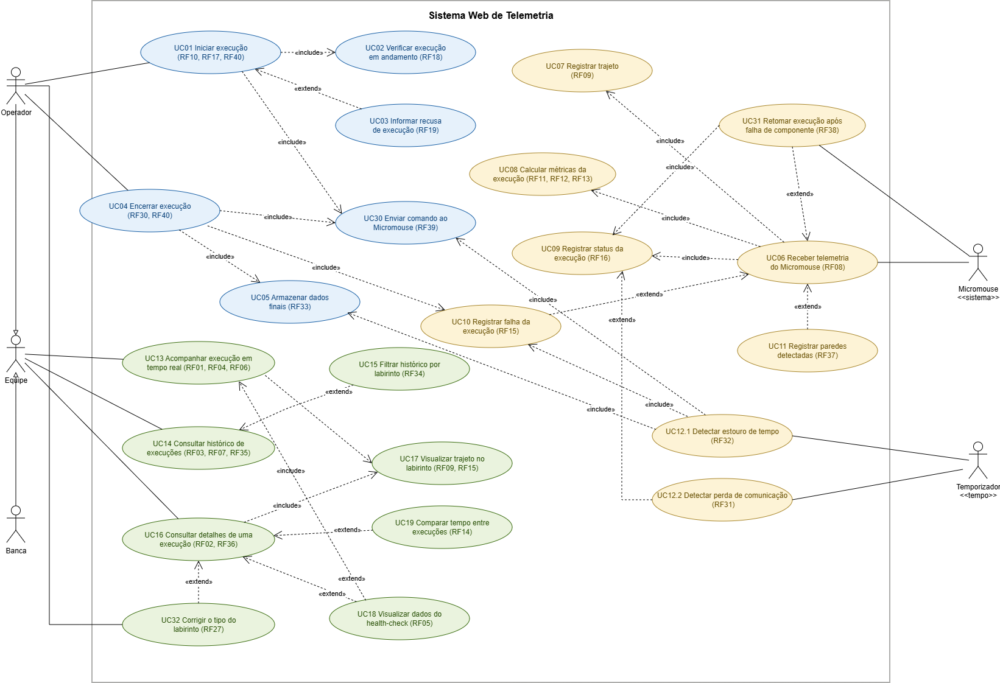
Fonte: João Marcos e Karoline Luz, 2026.
Imagem 2: Diagrama de Casos de Uso do Software Embarcado
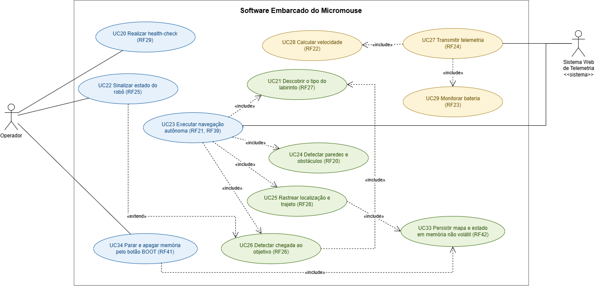
Fonte: João Marcos e Karoline Luz, 2026.
Arquitetura da solução de software¶
Alinhamento operacional: execução lógica com até 3 tentativas (TAP) e downlink Bluetooth restrito à interrupção manual estão documentados na seção Backlog do Software (acima), com os casos de uso do Diagrama de Casos de Uso.
Propósito do software¶
O software do projeto tem dois papéis complementares dentro do sistema do Micromouse:
- Firmware embarcado (ESP32): lê os sensores de parede à frente, à esquerda e à direita de cada célula, controla os motores DC com encoder em malha fechada (PID) nos deslocamentos e nos giros de 90° e 180° e executa a navegação autônoma com o algoritmo flood fill (método Adachi) — algoritmo mais usado em competições de micromouse, alinhado à bibliografia do projeto (Law; Hilmer/Micromouse Online). O robô sabe qual labirinto vai resolver, pelo DIP switch, mas não conhece as paredes: sabe que a área de objetivo fica no canto diametralmente oposto ao de partida. Para isso, o firmware:
- mantém um mapa das paredes conhecidas em cada célula e recalcula as distâncias até o objetivo sempre que descobre uma parede nova;
- lê o tipo do labirinto (4x4, 8x4 ou 12x4) no DIP switch e, a partir dele, define as células de objetivo (RF27);
- declara a chegada ao alcançar uma célula de objetivo (RF26);
- grava o mapa, a posição e o estado na memória flash (RF42), preservando o mapa entre tentativas da mesma execução lógica quando o operador retoma após falha (RF38);
- executa a exploração dentro do limite de 10 minutos totais por tipo de labirinto, que somam até 3 tentativas da mesma execução lógica (RF32, TAP);
- mede o avanço pelos encoders; o ToF frontal corrige a posição quando há parede à frente; os ToF laterais centralizam o robô no corredor (RF21, RF22);
- envia a telemetria (posição, trajeto e bateria) via Bluetooth em uma tarefa separada, no outro núcleo da ESP32, sem interferir no laço de navegação.
- Sistema de Telemetria (web): é a plataforma de acompanhamento usada pela equipe e pela banca. Recebe e valida as mensagens enviadas pelo Micromouse, registra execuções lógicas e tentativas (até 3 por execução lógica), trajeto, bateria, velocidade, tempo, status, retomadas e falhas, mantém o histórico e disponibiliza esses dados para visualização, durante e após a execução.
O Sistema de Telemetria não teleopera o robô: não envia comandos de navegação nem altera código ou memória do labirinto (RNF06). O único downlink previsto no TAP é o comando de interrupção Bluetooth quando o operador encerra manualmente uma tentativa em andamento (RF30). Nova execução, Encerrar tentativa e Retomar tentativa (n/3) são coordenados pela interface e pelo firmware (UC01, UC04, UC31). O par genérico iniciar/parar por downlink não faz parte desta versão. Uma falha no servidor ou na rede não interrompe a navegação autônoma (RNF07). Esta seção detalha principalmente a arquitetura do Sistema de Telemetria; o firmware aparece nos pontos em que se comunica com ele.
Padrão arquitetural: MVC com a View desacoplada¶
O Sistema de Telemetria adota o padrão MVC (Model-View-Controller) em um backend monolítico, com a camada de visualização desacoplada e comunicando-se com o backend por uma API REST em JSON.
| Camada | Responsabilidade no sistema | Onde fica |
|---|---|---|
| Model | Representa as entidades do domínio (execução lógica, tentativa, trajeto, retomadas, tentativas rejeitadas) e sua persistência, garantindo a integridade dos dados (RF17, RNF01, RNF05). | Backend: modelos SQLAlchemy sobre o PostgreSQL |
| Controller | Recebe a telemetria e as requisições do front-end, valida as mensagens (RNF09) e aplica as regras do TAP: abertura de execução lógica e tentativas (UC01), uma tentativa aberta por vez (RF18), limite de 3 tentativas, tentativa rejeitada (RF19), encerramento manual com interrupção downlink (RF30, UC04), encerramento automático por tempo de execução lógica ou perda de link (UC12.1, UC12.2, RF31, RF32), retomadas (RF38, UC31) e chegada ao objetivo (RF26). Devolve os dados em JSON. | Backend: rotas do FastAPI |
| View | Apresenta a execução em tempo real, o histórico e os detalhes de cada tentativa ao usuário, com contador (n/3), Nova execução, Encerrar tentativa e Retomar tentativa (n/3), consumindo a API do backend. | Front-end: React com TypeScript (src/frontend) |
Justificativa da escolha:
- Domínio pequeno e bem delimitado. O sistema recebe mensagens de um único robô, processa no máximo cerca de 10 mensagens por segundo (RNF11) e atende poucos usuários ao mesmo tempo. Um único backend organizado em MVC resolve esse volume sem a complexidade operacional de vários serviços.
- Microsserviços foram descartados porque exigiriam comunicação entre serviços, implantação de várias peças e observabilidade distribuída, um custo que não se justifica para o tamanho do problema e para o prazo da disciplina.
- Separação clara de responsabilidades. As regras de execução ficam concentradas no Controller, e o Model isola o acesso ao banco. Isso facilita dividir o trabalho entre os membros e testar as regras de forma independente da interface.
Linguagens de programação, frameworks e bibliotecas¶
| Parte | Linguagem | Frameworks e bibliotecas | Papel |
|---|---|---|---|
| Backend | Python | FastAPI | Define as rotas da API REST (Controller) e gera automaticamente a documentação OpenAPI dos endpoints, atendendo ao RNF13. |
| Backend | Python | Pydantic | Valida o formato, os campos obrigatórios e as faixas das mensagens de telemetria antes de qualquer processamento (RNF09). |
| Backend | Python | SQLAlchemy | ORM que implementa a camada Model e faz o mapeamento das entidades para as tabelas do PostgreSQL. |
| Backend | Python | Uvicorn | Servidor ASGI que executa a aplicação FastAPI. |
| Front-end | TypeScript | React | Implementa a View em SPA: telas de tempo real, histórico, detalhe e labirinto, consumindo REST (comandos/consultas) e SSE para execução em andamento (RF04, RF06). |
| Firmware | C | A definir pela equipe de firmware | Navegação com flood fill, leitura dos sensores ToF, controle dos motores (PID) e envio de telemetria na ESP32; previstos a biblioteca do sensor ToF, o BluetoothSerial (Bluetooth clássico SPP) para a telemetria, o contador de pulsos do ESP32 (PCNT) para os encoders e o PWM (LEDC) para a ponte H. |
Por que React com TypeScript no front-end:
- React organiza a interface em componentes reutilizáveis (telemetria, contador n/3, modais de encerramento), o que facilita manter as telas previstas no protótipo e no diagrama de componentes.
- TypeScript tipa as respostas JSON da API e os estados da execução, reduzindo erros de integração com o backend (RNF01) e documentando o contrato da API no próprio código.
- A stack é amplamente usada na indústria e tem documentação madura, o que ajuda a equipe a evoluir a View sem acoplar regras de negócio ao front-end (MVC com View desacoplada).
Por que Python com FastAPI:
- Python tem sintaxe simples e um ecossistema amplo e bem documentado, o que reduz a curva de aprendizado em um projeto de prazo curto.
- A documentação interativa dos endpoints é gerada a partir do próprio código, o que mantém a documentação da API sempre atualizada (RNF13).
- O suporte nativo a operações assíncronas permite receber telemetria e atender às consultas do front-end ao mesmo tempo, sem atraso acumulado (RNF11).
- Todo o backend é desenvolvido pela equipe, sem plataformas prontas de telemetria ou dashboard (RNF12).
Por que usar o Pydantic:
Toda mensagem de telemetria precisa ser conferida antes de ser gravada: se os campos obrigatórios existem, se têm o tipo certo e se os valores fazem sentido (RNF09). Sem o Pydantic, essa conferência teria que ser escrita à mão, campo por campo, em cada rota:
# Sem Pydantic: cada campo é verificado manualmente
def receber_telemetria(mensagem: dict):
if "celula" not in mensagem or not isinstance(mensagem["celula"], str):
raise ErroDeValidacao("campo 'celula' ausente ou inválido")
if "bateria" not in mensagem or not isinstance(mensagem["bateria"], (int, float)):
raise ErroDeValidacao("campo 'bateria' ausente ou inválido")
if mensagem["bateria"] < 0:
raise ErroDeValidacao("campo 'bateria' fora da faixa")
if mensagem.get("status") not in ("health-check", "running", "success", "failed"):
raise ErroDeValidacao("campo 'status' inválido")
# ... e ainda converter o texto do horário de envio para data e hora
Com o Pydantic, o formato da mensagem é declarado uma única vez, como uma classe:
# Com Pydantic: as regras ficam declaradas em um só lugar
class Telemetria(BaseModel):
celula: str
bateria: float = Field(ge=0)
status: Literal["health-check", "running", "success", "failed"]
enviado_em: datetime
O exemplo é ilustrativo; o formato final das mensagens será definido no diagrama de componentes. Usar o Pydantic é mais simples e mais seguro do que não usá-lo porque:
- Menos código repetido: a regra de cada campo aparece uma vez, na classe, em vez de se repetir em cada rota que recebe ou devolve dados.
- Validação automática: o FastAPI aplica a classe na entrada da rota. Uma mensagem inválida é recusada antes de chegar à lógica da execução, com uma resposta que indica qual campo falhou, e o serviço continua funcionando (RNF09).
- Conversão de tipos: valores como o horário de envio chegam como texto e são convertidos automaticamente para data e hora, sem código extra.
- Documentação gerada a partir do código: a mesma classe aparece na documentação automática da API, então o formato documentado é sempre o formato validado (RNF13).
- Menos chance de erro: esquecer uma verificação manual em uma rota deixaria passar dados inválidos para o banco; com a classe, todas as rotas usam as mesmas regras.
Banco de dados: relacional com PostgreSQL¶
O sistema usa um banco de dados relacional, o PostgreSQL.
Por que relacional:
- Os dados têm estrutura fixa e relações claras: cada execução lógica agrupa até três tentativas; cada tentativa pertence a um labirinto, possui trajeto (sequência de células), eventos de retomada e, quando falha, um motivo. Esse formato se representa naturalmente em tabelas relacionadas, que serão detalhadas no diagrama entidade-relacionamento.
- As consultas previstas são típicas de banco relacional: filtrar execuções por labirinto (RF34), listar todas em ordem cronológica (RF03, RF35) e comparar tempos entre execuções (RF14).
- Chaves primárias, chaves estrangeiras e transações garantem a unicidade de cada execução (RF17) e impedem registros incompletos ou inconsistentes (RNF01).
- Um banco não relacional (como o MongoDB) seria vantajoso para dados sem esquema definido, o que não é o caso: a telemetria tem campos conhecidos e validados na entrada.
Por que PostgreSQL:
- Suporta com folga a escrita contínua da telemetria ao mesmo tempo que o front-end consulta a execução em andamento a cada 1 a 2 segundos.
- Oferece restrições de integridade (
UNIQUE,CHECK, chaves estrangeiras) que reforçam no próprio banco as regras do domínio. - Tem imagem oficial para Docker e integração madura com o SQLAlchemy.
- Os dados ficam em um volume persistente, preservados após reiniciar o servidor ou o computador (RNF05).
Ambiente de execução¶
O backend e o banco são executados com Docker Compose no notebook da equipe, com dois serviços:
| Serviço | Conteúdo | Observação |
|---|---|---|
api |
Aplicação FastAPI executada pelo Uvicorn | Expõe a API REST para a ponte Bluetooth e para o front-end. |
db |
PostgreSQL | Usa um volume nomeado para persistir os dados (RNF05). |
O backend e o banco sobem com Docker Compose (docker compose up). A ponte Bluetooth (Canal do Micromouse) roda no notebook da equipe, fora do container, lendo a porta serial pareada e repassando telemetria à API — alinhado ao RF4 da Eletrônica (TAP). O sistema funciona em rede local no notebook, sem depender de acesso à internet (RNF10).
Comunicação entre as partes¶
Entre o Micromouse e o Sistema de Telemetria¶
O Micromouse envia telemetria por Bluetooth (serial); o sistema web recebe os dados pela ponte e, quando o operador encerra manualmente uma tentativa (RF30, UC04), envia de volta apenas o comando de interrupção — nunca navegação nem iniciar/parar genérico (RNF06). O componente Canal do Micromouse isola o transporte: a ponte entrega mensagens ao Controller em formato único e, se houver interrupção pendente, escreve-a na porta serial. Controller, Model, banco e front-end permanecem independentes do detalhe da serial.
A ESP32 oferece Wi-Fi e Bluetooth integrados; o TAP e o RF4 da Eletrônica fixam Bluetooth para telemetria. A Opção Wi-Fi foi avaliada para referência:
| Critério | Opção A: Wi-Fi (HTTP) — referência | Opção B: Bluetooth (serial) — adotada (TAP) |
|---|---|---|
| Canal do Micromouse | Endpoint do FastAPI com comando na resposta HTTP. | Processo ponte no notebook: lê serial Bluetooth, trata reconexões (RNF08), repassa à API e envia interrupção quando pendente. |
| Infraestrutura | Rede local ou AP da ESP32. | Conexão ponto a ponto com o notebook (alcance curto, adequado ao acompanhamento ao lado do carrinho). |
| Ambiente UnB | Wi-Fi institucional instável e imprevisível na prova. | Não depende da rede campus; enlace dedicado notebook ↔ robô. |
| Alinhamento TAP | Não previsto no orçamento eletrônico. | Previsto no TAP (módulo Bluetooth). |
Decisão: Bluetooth serial com ponte no notebook. Wi-Fi e Bluetooth são tecnicamente viáveis na ESP32; para este projeto, Bluetooth reduz risco operacional na UnB e está no TAP. Wi-Fi permanece documentado apenas como alternativa de estudo.
Fluxo operacional (TAP / 2.1).
- O operador aciona Nova execução, informa o tipo de labirinto (só no backend, para a web desenhar a grade do labirinto) e abre a execução lógica com tentativa 1/3 (UC01), respeitando uma tentativa aberta por vez (RF18).
- O firmware executa health-check (UC20) e envia telemetria com status
health-check. O backend associa os dados àtentativa_ide aoattempt_index(RF10, RF17). - Com health-check aprovado, o firmware inicia o trajeto de forma autônoma (
running); o backend registra a transição pela telemetria recebida — sem downlink de “iniciar” (RF39 reservado à interrupção Bluetooth). - Encerramento manual (RF30): o operador usa Encerrar tentativa (modal com motivo
collision,stuckouout_of_tracke observação opcional). A tentativa passa afailed, com o motivo escolhido e a origemencerrado_operador; a execução lógica permaneceem_andamento. A ponte envia interrupção Bluetooth quando aplicável (UC04). - Encerramento automático (UC12.1, UC12.2): 10 s sem telemetria (RF31) ou 10 min de execução lógica desde Nova execução (RF32) encerram a tentativa aberta e cancelam a execução lógica, sem downlink obrigatório ao robô.
- Após falha recuperável, o operador aciona Retomar tentativa (n/3) (UC31), abrindo nova
tentativa_idcom mapa preservado (RF38, RF42). - Parada de emergência sem rede: botão BOOT (RF41).
No firmware, o envio da telemetria roda em tarefa FreeRTOS no outro núcleo. O laço de navegação consulta apenas sinalização local de interrupção (Bluetooth ou BOOT), sem bloquear na rede (RNF07).
Entre o front-end e o backend¶
O front-end consome a API REST do backend em JSON para consultas e comandos (Nova execução, Encerrar tentativa, Retomar tentativa). Para o acompanhamento em tempo real, a View assina um fluxo SSE (EventSource) exposto por getStream(execucaoId), conforme o diagrama de classes MVC. A interface exibe o tempo desde a última atualização e o indicador Tentativa n/3 (RF04), dentro do orçamento de latência de até 2 segundos na interface (RNF02) e de 3 segundos fim a fim entre envio pelo robô e exibição (RNF04).
Diagrama de alto nível¶
O diagrama a seguir mostra os blocos da solução, suas responsabilidades e como se comunicam. As classes de cada camada MVC e o contrato REST/SSE entre View e Controller estão no diagrama de classes.
%%{init: {"flowchart": {"nodeSpacing": 90, "rankSpacing": 90}}}%%
flowchart TB
subgraph ROBO["Micromouse (ESP32)"]
FW["Firmware<br/>navegação flood fill,<br/>sensores e motores"]
end
subgraph BACK["Backend: Python + FastAPI (Docker)"]
RT["Canal do Micromouse"]
CT["Controller<br/>rotas REST e regras de execução"]
MD["Model<br/>entidades SQLAlchemy"]
end
DB[("PostgreSQL<br/>(Docker, volume persistente)")]
FE["Front-end (View)<br/>React + TypeScript"]
FE -- "REST + SSE<br/>Nova execução / Encerrar / Retomar tentativa" --> CT
CT -- "respostas em JSON" --> FE
FW -- "telemetria Bluetooth serial" --> RT
RT -- "entrega mensagem<br/>em formato único" --> CT
CT -- "aceite e interrupção pendente (RF30)" --> RT
RT -- "interrupção manual<br/>(quando houver)" --> FW
CT -- "grava ou consulta" --> MD
MD -- "devolve entidades" --> CT
MD -- "executa comandos SQL<br/>(INSERT, SELECT)" --> DB
DB -- "retorna linhas<br/>resultantes" --> MDFonte: Wanjo Christopher Paraizo Escobar, 2026.
Como os dados circulam em uma consulta. Quando o front-end pede os dados da execução em andamento, a requisição chega ao Controller, que pede ao Model as informações necessárias. O Model não guarda os dados em memória: ele monta a consulta SQL, envia ao PostgreSQL e recebe de volta as linhas resultantes, que converte em entidades (execução, trajeto, retomadas). O Controller usa essas entidades para montar a resposta em JSON e devolve ao front-end, que atualiza a tela. Na gravação da telemetria o caminho é o mesmo, mas o Model envia um comando de inserção e o banco confirma o registro.
| Bloco | Responsabilidade |
|---|---|
| Firmware | Navega de forma autônoma com flood fill e envia telemetria por Bluetooth. Pode receber apenas interrupção downlink (RNF06); parada local via BOOT (RF41). |
| Canal do Micromouse | Ponte serial Bluetooth: entrega telemetria ao Controller e transmite interrupção manual pendente (RF30). |
| Controller | Valida mensagens; aplica regras TAP (execução lógica, tentativas, RF18–RF19, RF30–RF32, RF38); atende consultas do front-end. |
| Model | Persiste execuções lógicas, tentativas, trajetos, retomadas e tentativas rejeitadas. |
| PostgreSQL | Armazena os dados de forma persistente (RNF05). |
| Front-end (React + TypeScript) | Tempo real, histórico, contador (n/3), Nova execução, Encerrar e Retomar tentativa (RF04, RF30). |
Diagrama de classes (MVC)¶
O diagrama de classes UML detalha o Sistema de Telemetria segundo o padrão MVC: estereótipos «interface» na View (React + TypeScript), «control» e serviços auxiliares no Controller (FastAPI), entidades e repositório no Model (SQLAlchemy + PostgreSQL), além do firmware na ESP32 e da ponte Bluetooth no notebook. Ele complementa o diagrama de alto nível com atributos, métodos e cardinalidades do domínio (execução lógica, tentativas, telemetria e retomadas).
Figura 2: Diagrama de classes UML — arquitetura MVC (Sistema de Telemetria)
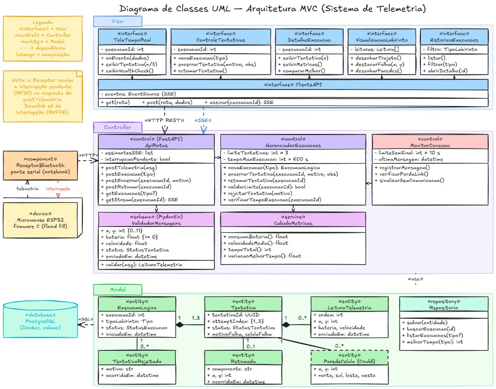
Fonte: Amanda de Moura, 2026. Abrir o diagrama no Excalidraw.
Notação utilizada¶
| Elemento | Representação | Significado |
|---|---|---|
«interface» |
Classe na faixa View | Contrato ou módulo de interface do front-end (telas e ClienteAPI). |
«control» |
Classe na faixa Controller | Orquestra requisições, regras de execução e monitoramento. |
«schema» |
Classe Pydantic | Validação de mensagens de telemetria (RNF09). |
«service» |
Classe de serviço | Cálculo de métricas sem estado persistente próprio. |
«entity» |
Classe no Model | Entidade de domínio persistida ou agregada ao repositório. |
«repository» |
Classe de repositório | Acesso a leitura/gravação no PostgreSQL. |
| Composição | Losango preenchido | Parte não existe sem o todo (ex.: tentativa dentro da execução lógica). |
| Dependência | Seta tracejada | Uso temporário (ex.: leitura referencia paredes da célula). |
Fonte: Autoria própria, 2026.
View (front-end)¶
| Classe | Papel | Métodos principais |
|---|---|---|
ClienteAPI |
Ponto único de HTTP e SSE (eventos: EventSource). |
get, post, assinar(execucaoId) |
TelaTempoReal |
Telemetria da tentativa aberta e health-check. | onEvento, exibirTentativa(n/3), exibirHealthCheck |
ControleTentativas |
Ações operacionais e contador n/3. | novaExecucao, encerrarTentativa, retomarTentativa |
DetalheExecucao |
Métricas finais e comparação com melhor tempo. | exibirTentativa, exibirMetricas, compararMelhor |
VisualizacaoLabirinto |
Trajeto, paredes e célula de falha. | desenharTrajeto, destacarFalha, desenharParedes |
HistoricoExecucoes |
Listagem e filtro por tipo de labirinto. | listar, filtrar, abrirDetalhe |
A View comunica com o Controller por HTTP REST (comandos e consultas) e SSE (stream da execução em andamento).
Controller (backend)¶
| Classe | Papel | Métodos / campos principais |
|---|---|---|
ApiRotas |
Entrada HTTP: telemetria da ponte, CRUD de execuções, stream SSE. | postTelemetria, postExecucao, postEncerrar, postRetomar, getExecucoes, getStream; interrupcaoPendente |
GerenciadorExecucoes |
Ciclo de vida da execução lógica e das tentativas. | limiteTentativas = 3, tempoMaximo = 600 s (RF32); novaExecucao, encerrarTentativa, retomarTentativa, validarLimite, rejeitarTentativa, verificarTempoLimite |
MonitorConexao |
Perda de link e tempo sem mensagem. | registrarMensagem, verificarPerdaLink, sinalizarSemComunicacao; limiteSemSinal = 10 s |
ValidadorMensagens |
Schema Pydantic da telemetria (x, y, bateria, status, …). |
validar(msg) → LeituraTelemetria |
CalculoMetricas |
Consumo, velocidade média, tempo total e variação. | consumoBateria, velocidadeMedia, tempoTotal, variacaoMelhorTempo |
Nota de integração (RF30 / RNF06): o ReceptorBluetooth recebe a interrupção pendente na resposta de postTelemetria; o downlink Bluetooth serve apenas à interrupção manual, nunca à navegação.
Model (persistência)¶
| Classe | Cardinalidade / relação | Conteúdo principal |
|---|---|---|
ExecucaoLogica |
1 → 1..3 Tentativa; 0..* TentativaRejeitada |
execucaoId: UUID, tipoLabirinto, status, iniciadaEm |
Tentativa |
0..* LeituraTelemetria; 0..1 Retomada |
tentativaId, attemptIndex (1..3), status, motivoFalha, celulaFalha |
LeituraTelemetria |
Dependência opcional em ParedeCelula |
ordem, x, y, bateria, velocidade, enviadoEm |
Retomada |
Ligada a uma tentativa | componente, x, y, ocorridaEm |
ParedeCelula |
Mapa descoberto (Could) | x, y, norte, sul, leste, oeste |
Repositorio |
Acesso SQL ao PostgreSQL | salvar, buscarExecucao, listarExecucoes, melhorTempo |
Atores externos ao MVC¶
| Elemento | Papel |
|---|---|
Micromouse ESP32 («device») |
Firmware em C (flood fill): envia telemetria e recebe interrupção. |
ReceptorBluetooth («component») |
Ponte serial no notebook: HTTP com ApiRotas, repasse de interrupção. |
PostgreSQL («database») |
Persistência em volume Docker (RNF05). |
Fonte: Autoria própria, 2026.
Diagrama BPMN¶
O diagrama BPMN 2.0 descreve o processo de uma execução lógica, do acionamento de Nova execução até um dos cinco fins possíveis: concluída ou cancelada por 3 tentativas esgotadas, por estouro de tempo, por perda de link ou por nova execução. Ele complementa o diagrama de alto nível, que mostra as partes do sistema, e o diagrama de classes, que mostra as responsabilidades: aqui aparecem a ordem das atividades, quem executa cada uma e as mensagens que os participantes trocam. O modelo tem duas páginas, a execução lógica (Figura 3) e o laço de navegação do firmware (Figura 4).
Figura 3: Diagrama BPMN — execução lógica
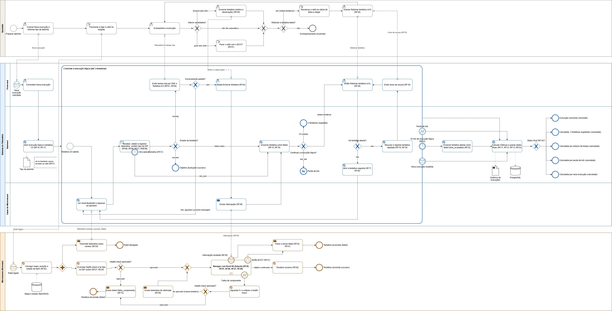
Fonte: Luiza da Silva Pugas (versão original) e Wanjo Christopher Paraizo Escobar (revisão), 2026. Abrir o diagrama no draw.io.
Legenda BPMN¶
| Elemento | Representação | Significado |
|---|---|---|
| Pool | Faixa horizontal com o nome na lateral | Participante do processo (Operador, Sistema de Telemetria, Micromouse). |
| Raia | Subdivisão de um pool | Parte do participante responsável pelas atividades (Front-end, Backend, Canal). |
| Tarefa | Retângulo de cantos arredondados | Atividade executada por uma pessoa ou pelo sistema. |
| Subprocesso expandido | Retângulo grande com atividades dentro | Conjunto de atividades que se repete a cada tentativa (até 3). |
| Subprocesso colapsado | Tarefa com o marcador "+" | Atividade detalhada em outro diagrama (o laço de navegação da Figura 4). |
| Evento de início e de fim | Círculo de borda fina (início) ou grossa (fim) | Onde o fluxo começa e onde termina. |
| Gateway exclusivo | Losango com "X" | Decisão em que só um dos caminhos segue. |
| Gateway paralelo | Losango com "+" | Caminhos que seguem ao mesmo tempo. |
| Evento de mensagem | Círculo com envelope | Envio ou recebimento de uma mensagem de outro participante. |
| Evento de timer | Círculo com relógio | Prazo que dispara o fluxo (10 min por execução lógica, 10 s sem telemetria). |
| Evento de sinal | Círculo com triângulo | Aviso local, sem mensagem (o botão BOOT). |
| Evento de erro | Círculo com raio | Falha que interrompe a atividade (falha de componente, perda de link). |
| Evento de fronteira interruptivo | Evento de borda dupla sobre a borda da atividade | Ocorrência que interrompe a atividade e desvia o fluxo. |
| Fluxo de sequência | Seta contínua | Ordem das atividades dentro de um participante. |
| Fluxo de mensagem | Seta tracejada com círculo na origem | Comunicação entre participantes diferentes. |
| Objeto de dados | Folha com canto dobrado | Insumo ou resultado do processo (tipo de labirinto, histórico de execuções). |
| Depósito de dados | Cilindro | Armazenamento que continua depois do processo (PostgreSQL, flash/NVS). |
Fonte: Autoria própria, 2026.
Participantes¶
| Participante | Papel no processo | Atividades principais |
|---|---|---|
| Operador | Pessoa da equipe que conduz a prova. | Aciona Nova execução e informa o tipo de labirinto; posiciona e liga o robô; acompanha; encerra a tentativa pela web (RF30) ou pelo BOOT (RF41); recoloca o robô e aciona Retomar tentativa (n/3) (RF38). |
| Sistema de Telemetria: Front-end | Interface web (View). | Formulário de Nova execução; tempo real por SSE com o contador n/3 (RF01, RF04); modal Encerrar tentativa (RF30); botão Retomar tentativa (n/3) (RF38); aviso de recusa (RF19). |
| Sistema de Telemetria: Backend | Regras das tentativas (Controller e Model). | Abre a execução lógica e a tentativa 1/3 (RF10, RF17); valida e registra a telemetria (RF08, RF09, RNF09); encerra tentativas como failed (RF15, RF16); recusa uma segunda tentativa aberta (RF18, RF19); aplica os limites de 10 s (RF31) e 10 min (RF32); calcula e grava as métricas (RF11, RF12, RF13, RF33). |
| Sistema de Telemetria: Canal do Micromouse | Ponte Bluetooth serial no notebook. | Lê a serial e repassa a telemetria ao backend; envia a interrupção ao robô (RF39). |
| Micromouse (firmware) | Robô autônomo na ESP32. | Carrega o estado da flash (RF42); faz o health-check (RF29); transmite telemetria em outro núcleo (RF24); navega com flood fill e o método Adachi; para ao receber a interrupção ou ao toque do BOOT. |
Fonte: Autoria própria, 2026.
O Micromouse é autônomo (RNF07): ele não recebe ordens de navegação, e o tipo do labirinto vem do DIP switch, configurado à mão. Por isso os pools só se comunicam por fluxos de mensagem, descritos a seguir.
Mensagens entre os participantes¶
| Mensagem | De | Para | Quando |
|---|---|---|---|
| Nova execução | Operador | Front-end | O operador preenche o formulário, com o tipo de labirinto. |
| Robô ligado | Operador | Micromouse | O operador posiciona o robô na largada e o liga; é uma ação física, não uma mensagem de rede. |
| Telemetria (running, success, failed) | Micromouse | Canal do Micromouse | Durante toda a tentativa, por Bluetooth serial (RF24). |
| Telemetria em tempo real | Front-end | Operador | A cada leitura aceita pelo backend, por SSE (RF01, RF04). |
| Motivo e observação | Operador | Front-end | O operador decide encerrar a tentativa pela web (RF30). |
| Interrupção (RF39) | Canal do Micromouse | Micromouse | Só no encerramento manual pela web. É o único fluxo do Sistema de Telemetria para o robô. |
| Retomar tentativa | Operador | Front-end | Depois de uma tentativa failed, se restarem tentativas (RF38). |
| Aviso de recusa (RF19) | Front-end | Operador | O backend recusou abrir a tentativa porque já havia uma aberta (RF18). |
Fonte: Autoria própria, 2026.
Dados do processo¶
| Dado | Tipo | Uso |
|---|---|---|
| Tipo de labirinto | Objeto de dados | Informado em Nova execução e guardado só no backend, para a web desenhar a grade. Nunca é enviado ao robô; o backend o usa para conferir o tipo lido no DIP switch (RF27). |
| Mapa e estado (flash/NVS) | Depósito de dados | Mapa das paredes, posição, estado da execução e tipo do labirinto do mapa. O firmware carrega ao ligar e grava a cada célula nova (RF42). |
| PostgreSQL | Depósito de dados | Tentativas, telemetria, métricas e status final (RF33). |
| Histórico de execuções | Objeto de dados (saída) | Resultado consultado depois pela web (RF34, RF35, RF36). |
Fonte: Autoria própria, 2026.
Caminhos da execução lógica¶
O subprocesso expandido "Controlar a execução lógica (até 3 tentativas)" concentra as regras das tentativas no Sistema de Telemetria. Os caminhos possíveis são:
- Abertura. O operador aciona Nova execução e informa o tipo de labirinto. O backend abre a execução lógica e a tentativa 1/3 (RF10, RF17) e começa a contar os 10 minutos. O operador então posiciona e liga o robô. O firmware carrega da flash o mapa e o estado (RF42) e, em paralelo, começa a transmitir telemetria por outro núcleo (RF24) e executa o health-check (RF29), que inclui ler o tipo no DIP switch (RF27). O backend confere o tipo lido com o informado; se divergirem, encerra a tentativa como
failedcomhealth_check_failede alerta na web, e o operador para o robô pelo BOOT (RF41). - Tentativa em andamento. Cada mensagem passa pelo Canal do Micromouse e é validada e registrada pelo backend (RF08, RF09, RNF09). Com status
running, o front-end atualiza o tempo real por SSE e o fluxo aguarda a próxima mensagem. Não existe comando de "iniciar": com o health-check aprovado, o robô parte sozinho. - Sucesso. O firmware declara sucesso ao alcançar uma célula de objetivo do tipo selecionado no DIP switch (RF26). O backend recebe
success, calcula as métricas e fecha a execução lógica como concluída. - Falha de componente. O firmware para e envia
failedcom motivofalha_componentee o componente afetado (RF15), como em qualquer outra falha: a tentativa é encerrada e consome uma das 3 (TAP). Depois do reparo, a retomada segue o caminho 6. - Encerramento manual. O operador escolhe o motivo e a observação no modal Encerrar tentativa (RF30), e o Canal do Micromouse envia a interrupção (RF39). O firmware para e envia
failed. Sem rede, o operador para o robô com o botão BOOT (RF41), com o mesmo resultado. - Tentativa
failede retomada. O backend encerra a tentativa comofailed(RF15, RF16) e decide: com as 3 tentativas usadas, a execução lógica termina como cancelada; se restarem tentativas, o operador recoloca o robô na célula da falha, religa e aciona Retomar tentativa (n/3) (RF38). O backend recusa o pedido se já houver tentativa aberta (RF18, RF19); caso contrário, abre a tentativa seguinte (RF17, RF38). -
Encerramentos automáticos. Três eventos na borda do subprocesso encerram a execução lógica como cancelada:
- 10 s sem telemetria (RF31): a tentativa passa a
failedcomlink_loste o erro "Perda de link" sai do subprocesso; - 10 min de execução lógica (RF32), contados desde Nova execução e somando as tentativas e os intervalos: a tentativa aberta passa a
failedcomtime_exceeded; - Nova execução recebida: o operador abre outra execução lógica.
Nenhum desses caminhos envia comando ao robô. Se ele ainda estiver andando, o operador o para com o BOOT (RF41). 8. Fechamento. Em todos os casos, o backend calcula as métricas e grava os dados finais no PostgreSQL (RF11, RF12, RF13, RF33), e a execução lógica termina com o status do fim correspondente (RF16).
- 10 s sem telemetria (RF31): a tentativa passa a
Laço de navegação do firmware¶
A Figura 4 detalha o subprocesso colapsado "Navegar com flood fill (Adachi)" do pool Micromouse. O laço roda uma vez por célula e segue o pseudocódigo da seção Algoritmo de navegação, onde está a justificativa da escolha.
Figura 4: Diagrama BPMN — laço de navegação do firmware
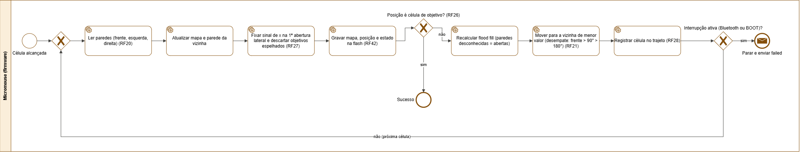
Fonte: Luiza da Silva Pugas (versão original) e Wanjo Christopher Paraizo Escobar (revisão), 2026. Abrir o diagrama no draw.io.
| Passo | O que o firmware faz | Requisito |
|---|---|---|
| 1 | Lê as paredes da frente, da esquerda e da direita. | RF20 |
| 2 | Atualiza o mapa, incluindo a parede vista pela célula vizinha. | — |
| 3 | Na primeira abertura lateral, fixa o sinal do eixo x e descarta os objetivos espelhados. | RF27 |
| 4 | Grava mapa, posição e estado na flash. | RF42 |
| 5 | Se a posição é uma célula de objetivo, declara sucesso. | RF26 |
| 6 | Recalcula o flood fill, tratando paredes desconhecidas como abertas. | — |
| 7 | Move para a vizinha de menor valor, com desempate frente > 90° > 180°. | RF21 |
| 8 | Registra a célula no trajeto. | RF28 |
| 9 | Se há interrupção ativa (Bluetooth ou BOOT), para e envia failed. Senão, volta ao passo 1 na próxima célula. |
RF39, RF41 |
Fonte: Autoria própria, 2026.
Algoritmo de navegação¶
Restrições do problema¶
- O robô sabe qual labirinto vai resolver: o tipo é selecionado no DIP switch antes de ligar (RF27). Não conhece as paredes. Sabe que parte de um beco sem saída em um canto e que a área de objetivo fica no canto diametralmente oposto.
- Os labirintos possíveis são 4x4, 8x4 e 12x4, com células de 18 cm. Cada tipo de labirinto tem 10 minutos no total, somando até 3 tentativas.
- Basta chegar ao objetivo uma vez por execução; não há corrida de volta nem corrida rápida posterior.
- Os sensores enxergam apenas as paredes da célula atual (frente, esquerda e direita), e os giros de 90° e 180° custam tempo.
Estado da arte¶
| Algoritmo | Como funciona | Vantagens | Desvantagens | Fontes |
|---|---|---|---|---|
| Busca em profundidade (DFS) | Segue um caminho até não haver saída e então volta pela pilha até a última bifurcação com opção não explorada. | Não precisa saber onde fica o objetivo; implementação simples. | Não garante o menor caminho e perde tempo explorando o labirinto inteiro; o retrocesso gera muitos giros de 180°. | [7, p. 24, 28] |
| Flood fill | Atribui a cada célula a distância até o objetivo e move o robô sempre para a vizinha de menor distância. | Direciona a busca ao objetivo; o mesmo mapa de distâncias serve para explorar e para seguir o caminho. | Precisa conhecer a posição do objetivo para numerar as células. | [6, p. 503], [9] |
| Flood fill modificado | Igual ao flood fill, mas recalcula apenas as células afetadas pela parede nova. | Percorre as mesmas células que o flood fill com muito menos atualizações de distância. | Implementação mais complexa; o ganho só aparece em labirintos grandes. | [6, p. 503, 506], [7, p. 29] |
| A | Busca guiada por uma estimativa da distância restante até o objetivo. | Encontra o menor caminho. | Usa mais memória, pois guarda toda a lista aberta; em um labirinto 5x5 não se diferenciou do flood fill. | [8, p. 366, 368, 372] |
Segundo Law, o flood fill venceu primeiros lugares em competições internacionais de micromouse, e sua versão modificada é a mais usada nelas [6, p. 503]. Nos cinco labirintos de competição testados pelo autor, as duas versões percorreram exatamente o mesmo número de células; a diferença esteve só no esforço de cálculo, por exemplo 135.936 contra 3.197 atualizações de distância no labirinto da IEEE Region 6 de 2012 [6, p. 506, Tabela I]. Sharma e Munshi chegam à mesma recomendação para competições [7, p. 29].
O método Adachi¶
O método Adachi (足立法) foi criado por Yoshihiko Adachi quando ele era estudante e membro do Fukuyama Microcomputer Club, e foi apresentado em 1984 [10, seção 4-5], [11]. Até então, a abordagem comum era percorrer o labirinto inteiro primeiro e só depois calcular o caminho mínimo [10, seção 4-5]. A ideia do método, como descrita pela JSDKK, é:
- Olhar para o labirinto como um mapa em branco até o objetivo e imaginar o caminho mais curto até ele.
- Seguir esse caminho. Ao encontrar uma parede, levá-la em conta, junto com as paredes já vistas, e recalcular o caminho mais curto.
- Repetir até chegar.
Em outras palavras, o método trata toda parede desconhecida como inexistente (未知の壁を無いものとして考える). É o mesmo raciocínio de uma pessoa perdida que sabe onde fica a saída: ela supõe o caminho mais curto, vai conferir e, se estiver bloqueado, pensa de novo [10, seção 4-5]. A mesma fonte afirma que os métodos de busca predominantes hoje são evoluções do método Adachi e que quase todos os mouses de nível mais alto o utilizam [10, seção 4-5].
Como o "caminho mais curto" é calculado: o flood fill. Harrison descreve o flood fill (ou algoritmo de Bellman) como o método mais simples disponível a um micromouse [9]:
- Guardar um valor por célula do labirinto.
- Colocar o valor 0 na célula de objetivo.
- Percorrer todas as células e garantir que cada uma tenha um valor igual a 1 a mais que o da sua vizinha acessível de menor valor.
- Repetir o passo 3 até que os valores parem de mudar.
Depois disso, cada célula guarda sua distância até o objetivo, e basta o robô "descer" os valores, indo sempre para a vizinha de valor menor. O cálculo só precisa ser refeito quando uma decisão é necessária, isto é, em uma bifurcação, e pode ser distribuído em pequenos pedaços enquanto o robô se move [9]. Combinado com a hipótese de Adachi, as células ainda não visitadas entram no cálculo como se não tivessem paredes, então todo o labirinto tem distância definida desde o início.
As quatro variantes de Adachi. Harrison reconstruiu, a partir de anotações em japonês, os quatro métodos que Adachi apresentou para a fase de busca [11]:
| Variante | Comportamento | Observação |
|---|---|---|
| Método 0 | Vai e volta entre a largada e o objetivo, sempre pelo melhor caminho a partir de onde está, até que o melhor caminho entre os dois não passe por nenhuma célula inexplorada. | Pode desperdiçar tempo e corridas, pois precisa tocar a largada e o objetivo em cada passagem. |
| Método 1 | Procura as células inexploradas que estão no melhor caminho calculado entre a largada e o objetivo, calculando duas rotas a cada decisão. | O caminho ótimo pode mudar durante a exploração e fazer o robô trocar de alvo. |
| Método 2 | Alterna entre a largada e o objetivo, mas inverte o sentido assim que o caminho até o alvo atual já é ótimo, sem precisar tocá-lo. | Corrige o principal defeito do método 0. |
| Método 3 | Usa o método 0 para encontrar o objetivo pela primeira vez e depois passa para o método 1. | É uma otimização do método 1 com uma busca inicial mais rápida. |
Todas as variantes compartilham o núcleo descrito pela JSDKK; elas diferem no que fazer depois de chegar ao objetivo, quando o robô procura o caminho mínimo para as corridas rápidas. Como neste projeto basta chegar ao objetivo uma vez, o que interessa é esse núcleo, que corresponde à primeira ida do método 0 (e à fase inicial do método 3).
Decisão: flood fill com o método Adachi¶
O firmware adota o flood fill com a hipótese de Adachi (paredes desconhecidas tratadas como inexistentes e recálculo a cada parede nova), conforme o item 4.2.3.2.1 da EAP de Software. A DFS foi descartada após a análise do estado da arte. Os motivos são:
- É o que a literatura e as competições indicam. O flood fill e suas variantes são os mais usados e premiados [6, p. 503], [10, seção 4-5]. Nas fontes consultadas, a DFS aparece apenas como alternativa inferior, por não garantir o menor caminho e explorar o labirinto inteiro [7, p. 24, 28].
- Vai direto ao objetivo. O robô não precisa varrer o labirinto, o que reduz tempo, giros de 180° e desgaste da bateria dentro do limite de 10 minutos.
- Tolera erro no mapa. Como o caminho é recalculado a cada parede descoberta, uma leitura diferente da esperada apenas muda as distâncias. Na DFS, uma parede lida errada corrompe a pilha de retrocesso. A odometria por encoders reduz o principal risco do mapa em malha aberta: a patinação não percebida.
- Custo computacional desprezível. Com no máximo 144 células no mapa (ver abaixo), recalcular todas as distâncias leva muito menos que o tempo de atravessar uma célula. Por isso, o flood fill simples é suficiente e mais fácil de depurar do que a versão modificada, cujo ganho só aparece em labirintos grandes [6, p. 506].
Tipo do labirinto e orientação¶
Nas fontes consultadas, o flood fill é aplicado a labirintos de tamanho e objetivo conhecidos. Neste projeto, o tipo do labirinto é selecionado no DIP switch antes de ligar o robô (RF27), então o algoritmo da literatura se aplica diretamente. Resta uma única incerteza, a orientação, tratada abaixo.
| Vias 1–2 do DIP switch | Tipo | Células de objetivo |
|---|---|---|
00 |
4x4 | (3, 3) |
01 |
8x4 | (7, 3) ou (3, 7) |
10 |
12x4 | (11, 3) ou (3, 11) |
11 |
inválido | reprova o health-check |
As vias 3 e 4 ficam reservadas para modos de teste e calibração. O firmware lê o DIP switch só na inicialização.
Referencial do robô. A largada é a célula (0, 0). O eixo y aponta para a abertura do beco da largada e é sempre positivo. O eixo x é o lateral: na largada, o robô não sabe se o labirinto se estende para a direita ou para a esquerda, e o sinal de x é fixado na primeira abertura lateral que ele encontrar. Com o sinal fixado, x também passa a ser sempre positivo, e o mapa cabe em uma matriz de 12 × 12 células.
Orientação. O tipo não diz se o lado longo do labirinto fica à frente ou ao lado do robô. Por isso, no 8x4 e no 12x4, as duas células da tabela entram como objetivo ao mesmo tempo: o flood fill aceita vários objetivos, basta colocar 0 em todos. Chegar a uma delas já confirma a orientação, porque o robô só visita células que existem: num 8x4 com o lado longo em x, o y nunca passa de 3, e o robô não alcança (3, 7). Enquanto o sinal de x não estiver fixado, os objetivos espelhados também entram no cálculo.
Mapa na memória. Cada célula guarda 4 bits de paredes (norte, sul, leste e oeste), um bit de "visitada" e a distância até o objetivo. O mapa, a posição, o estado da execução e o tipo de labirinto a que o mapa pertence ficam gravados na flash (RF42). Ao ligar, se o tipo no DIP switch for diferente do gravado, o mapa é zerado, para que um labirinto não reaproveite as paredes de outro.
Tipo divergente do informado na web. O robô envia o tipo lido no health-check. Se ele divergir do tipo informado em Nova execução, o backend encerra a tentativa como failed com health_check_failed e alerta na web; o operador para o robô pelo BOOT (RF41), corrige o DIP switch e retoma.
Desempate por giros. Quando duas vizinhas têm a mesma distância, o robô prefere seguir em frente, depois girar 90° e, por último, girar 180°. Um peso de giro no próprio cálculo das distâncias fica como melhoria a avaliar nos testes.
Falha de componente, retomada TAP e botão BOOT. Falha de componente encerra a tentativa (failed, RF15). O operador aciona Retomar tentativa (n/3); o backend abre nova tentativa, o firmware refaz UC20 e pode marcar telemetria de retomada (RF38), preservando mapa e posição na flash (RF42). Se o health-check falhar de novo, nova tentativa failed com falha_componente. Recolhimento físico: um toque no BOOT apaga o mapa antes de recolocar o robô na largada (RF41). Durante corrida, BOOT envia parada local com motivo encerrado_operador.
Pseudocódigo do laço de navegação:
ao iniciar:
ler o tipo no DIP switch; se o código for inválido: reprovar o health-check
carregar mapa, posição, estado e tipo da flash
se o tipo da flash for diferente do tipo do DIP: zerar mapa e estado
se estado == "running": # Retomar tentativa (n/3): continua da célula gravada, com o mapa
continuar da posição gravada
senão:
posição = (0, 0); mapa = vazio, exceto as paredes da largada
objetivos = células de objetivo do tipo e seus espelhos
a cada célula alcançada:
ler paredes (frente, esquerda, direita) e gravá-las no mapa e na vizinha
se houver abertura lateral e o sinal de x não estiver fixado:
fixar o sinal e descartar os objetivos espelhados
gravar mapa, posição e estado na flash
se posição ∈ objetivos: declarar sucesso e parar
recalcular o flood fill:
objetivos = 0; paredes desconhecidas = abertas
repetir até nada mudar: valor(c) = 1 + menor valor entre as vizinhas acessíveis de c
mover para a vizinha acessível de menor valor
(empate: frente > giro de 90° > giro de 180°)
se interrupção (Bluetooth ou BOOT) estiver ativa: parar e enviar "failed" conforme motivo
O que depende dos testes (7.4). Os pulsos de encoder por célula e por giro, a sintonia dos PIDs (velocidade e centralização) e o limiar de parede dos ToF, a confiabilidade da leitura de paredes e a eventual adoção de um peso de giro no cálculo das distâncias.
Exemplo resolvido: labirinto 4x4¶
O DIP switch indica 4x4 (00). Para simplificar, o exemplo começa depois de o robô ter passado pela célula (0, 1) e visto ali uma abertura para a direita: isso fixa o sinal de x e elimina o objetivo espelhado. O único objetivo é (3, 3).
1. Antes de descobrir paredes. Com as paredes desconhecidas tratadas como abertas, a distância de cada célula é simplesmente o número de passos até (3, 3). A única parede conhecida é a da largada, que só tem saída para cima.
| y \ x | 0 | 1 | 2 | 3 |
|---|---|---|---|---|
| 3 | 3 | 2 | 1 | 0 |
| 2 | 4 | 3 | 2 | 1 |
| 1 | 5 | 4 | 3 | 2 |
| 0 | 6 (S) | 5 | 4 | 3 |
O robô desce os valores: (0, 0) = 6 → (0, 1) = 5 → (0, 2) = 4. Em (0, 2) há empate entre (0, 3) e (1, 2), ambas com valor 3; pelo desempate, ele segue em frente para (0, 3). Depois gira à direita e passa por (1, 3) = 2 até (2, 3) = 1.
2. Parede descoberta. Em (2, 3), o sensor da frente encontra uma parede entre (2, 3) e (3, 3). O flood fill é recalculado com essa parede:
| y \ x | 0 | 1 | 2 | 3 |
|---|---|---|---|---|
| 3 | 5 | 4 | 3 | 0 |
| 2 | 4 | 3 | 2 | 1 |
| 1 | 5 | 4 | 3 | 2 |
| 0 | 6 (S) | 5 | 4 | 3 |
A célula (2, 3) passa de 1 para 3, porque agora só alcança o objetivo passando por (2, 2), e as células que dependiam dela também sobem. O robô desce de novo: (2, 3) = 3 → (2, 2) = 2 → (3, 2) = 1 → (3, 3) = 0.
3. Chegada. Em (3, 3), o robô alcança a célula de objetivo do tipo selecionado no DIP switch e declara sucesso (RF26). Como o tipo é conhecido, não é preciso conferir as bordas do labirinto.
Pendências da arquitetura¶
| Pendência | Responsáveis pelo alinhamento | Impacto na arquitetura |
|---|---|---|
| Detalhes da ponte Bluetooth (formato serial, reconexão) | Software, eletrônica e firmware | Transporte resolvido: Bluetooth clássico SPP da ESP32 (BluetoothSerial), recebido como porta serial no notebook. Resta o formato das mensagens, que impacta o empacotamento e o envio de interrupção (RF30). |
| Uso do DIP switch | Software, eletrônica e firmware | Resolvida: as vias 1 e 2 selecionam o labirinto (tabela em Tipo do labirinto e orientação); as vias 3 e 4 ficam reservadas para teste e calibração, a definir com o firmware. |
| Lista de componentes do health-check | Software, eletrônica e firmware | Resolvida: bateria, tof_frontal_esq, tof_frontal_dir, tof_esquerdo, tof_direito, motor_esquerdo, motor_direito, encoder_esquerdo, encoder_direito (9 itens, conforme a Eletrônica). A lista fixa é validada na entrada (RNF09) e usada no motivo falha_componente e no evento de retomada. |
| Especificação dos sensores e encoders | Software, eletrônica e firmware | O modelo do ToF, a posição dos 4 sensores, a resolução do encoder e a escolha entre XSHUT e multiplexador I²C afetam o código de leitura, a calibração e os pinos do ESP32. |
| Formato das mensagens de telemetria | Software e firmware | Detalhado no diagrama de componentes. Além dos dados de telemetria, as mensagens precisam trazer o tipo de labirinto lido no DIP switch (RF27), o tipo de início do health-check ("nova" ou "retomada", RF38) e, nas falhas e retomadas, o componente afetado. |
Persistência de dados¶
O Sistema de Telemetria usa um banco relacional PostgreSQL. O diagrama entidade-relacionamento (DER) a seguir mostra as tabelas, seus atributos, as chaves e as cardinalidades entre elas. O modelo segue as decisões do TAP e do Backlog do Software: uma execução lógica agrupa até 3 tentativas, e o trajeto do robô é transmitido e exibido em tempo real no front-end.
Figura 3: Diagrama entidade-relacionamento do Sistema de Telemetria
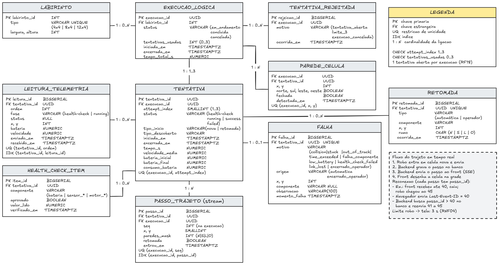
Fonte: Amanda de Moura, 2026. · Acesso pelo Excalidraw
Legenda¶
| Sigla | Significado |
|---|---|
PK |
Chave primária: identifica cada linha da tabela. |
FK |
Chave estrangeira: referencia a chave primária de outra tabela. |
UQ |
Restrição de unicidade: o banco não aceita valores repetidos na coluna ou combinação. |
IDX |
Índice: acelera consultas sobre as colunas indicadas, sem impor regra. |
1 : N |
Cardinalidade da ligação (lado esquerdo : lado direito). |
Entidades¶
Tabela 6: Entidades do modelo de dados
| Entidade | Finalidade |
|---|---|
LABIRINTO |
Tipos de labirinto possíveis (4x4, 8x4, 12x4). Permite filtrar execuções e comparar tempos do mesmo labirinto. |
EXECUCAO_LOGICA |
Uma rodada em um tipo de labirinto, aberta em Nova execução. Agrupa até 3 tentativas e controla o limite de 10 minutos. |
TENTATIVA |
Cada tentativa (n/3) dentro da execução lógica, com status, tempos e métricas finais. |
LEITURA_TELEMETRIA |
Todas as mensagens recebidas do robô (bateria, velocidade, célula atual), inclusive as do health-check. |
PASSO_TRAJETO |
Uma linha por célula nova em que o robô entra. É a fonte do desenho do trajeto em tempo real. |
PAREDE_CELULA |
Paredes detectadas em cada célula, formando o mapa descoberto pelo robô. |
HEALTH_CHECK_ITEM |
Resultado da verificação de cada componente no health-check de uma tentativa. |
FALHA |
Motivo, célula, componente e origem da falha que encerrou uma tentativa. |
TENTATIVA_REJEITADA |
Pedidos de abertura de tentativa recusados pelo sistema. |
Fonte: Amanda de Moura, 2026.
Relacionamentos e cardinalidades¶
Tabela 7: Relacionamentos do modelo de dados
| Relacionamento | Cardinalidade | Explicação |
|---|---|---|
LABIRINTO → EXECUCAO_LOGICA |
1 : N | Um tipo de labirinto tem várias execuções; cada execução usa um único tipo. |
EXECUCAO_LOGICA → TENTATIVA |
1 : 1..3 | Toda execução abre com a tentativa 1/3 e pode ter no máximo 3 tentativas (TAP). |
EXECUCAO_LOGICA → TENTATIVA_REJEITADA |
1 : N | Os pedidos recusados ficam ligados à execução, pois nenhuma tentativa chegou a ser criada. |
EXECUCAO_LOGICA → PAREDE_CELULA |
1 : N | O mapa pertence à execução, e não à tentativa, porque é preservado entre retomadas (RF38, RF42). |
TENTATIVA → LEITURA_TELEMETRIA |
1 : N | Cada tentativa recebe várias mensagens de telemetria. |
TENTATIVA → PASSO_TRAJETO |
1 : N | Cada tentativa registra as células percorridas. |
TENTATIVA → HEALTH_CHECK_ITEM |
1 : N | Cada health-check verifica vários componentes. |
TENTATIVA → FALHA |
1 : 0..1 | Uma tentativa termina em success (sem falha) ou em failed (uma falha, que a encerra). |
Fonte: Amanda de Moura, 2026.
Dicionário de dados¶
LABIRINTO¶
| Atributo | Tipo | Restrição | Descrição |
|---|---|---|---|
labirinto_id |
INT |
PK | Identificador do tipo de labirinto. |
tipo |
VARCHAR(5) |
UQ | 4x4, 8x4 ou 12x4. |
largura, altura |
INT |
— | Dimensões em células. |
EXECUCAO_LOGICA¶
| Atributo | Tipo | Restrição | Descrição |
|---|---|---|---|
execucao_id |
UUID |
PK | Identificador da execução lógica. |
labirinto_id |
INT |
FK | Tipo informado pelo operador em Nova execução (fica só no backend, RF27). |
status |
VARCHAR |
CHECK | em_andamento, concluida ou cancelada. |
tentativas_usadas |
INT |
CHECK 0..3 | Quantidade de tentativas já consumidas; devolvida ao usuário (US07). |
iniciada_em |
TIMESTAMPTZ |
— | Início do relógio da execução, usado no limite de 10 minutos (RF32). |
encerrada_em |
TIMESTAMPTZ |
— | Fim da execução. |
tempo_total_s |
NUMERIC |
— | Tempo corrido desde Nova execução, incluindo intervalos (RF13). |
TENTATIVA¶
| Atributo | Tipo | Restrição | Descrição |
|---|---|---|---|
tentativa_id |
UUID |
PK | Identificador único da tentativa (RF17). |
execucao_id |
UUID |
FK | Execução lógica a que pertence. |
attempt_index |
INT |
CHECK 1..3; UQ com execucao_id |
Número n exibido em Tentativa n/3. |
status |
VARCHAR |
CHECK | health-check, running, success ou failed (RF16). |
tipo_inicio |
VARCHAR |
CHECK | nova ou retomada; marca as tentativas abertas por Retomar tentativa (n/3) (RF38). |
tipo_dip |
VARCHAR |
— | Tipo lido pelo robô no DIP switch; o backend o compara com o tipo da execução (RF27). |
iniciada_em, encerrada_em |
TIMESTAMPTZ |
— | Início e fim da tentativa. |
tempo_s |
NUMERIC |
— | Duração da tentativa (RF13). |
velocidade_media |
NUMERIC |
— | Distância percorrida dividida pelo tempo (RF12). |
bateria_inicial, bateria_final, consumo_bateria |
NUMERIC |
— | Nível de bateria e consumo na tentativa (RF11). |
LEITURA_TELEMETRIA¶
| Atributo | Tipo | Restrição | Descrição |
|---|---|---|---|
leitura_id |
BIGSERIAL |
PK | Identificador da mensagem. |
tentativa_id |
UUID |
FK | Tentativa aberta no momento do recebimento. |
ordem |
INT |
UQ com tentativa_id |
Ordem de chegada dentro da tentativa. |
fase |
VARCHAR |
CHECK | health-check ou running; separa os dados do health-check (RF05). |
x, y |
INT |
— | Célula atual do robô. |
bateria |
NUMERIC |
— | Nível de bateria informado. |
velocidade |
NUMERIC |
— | Velocidade estimada pelo firmware (RF22). |
enviado_em |
TIMESTAMPTZ |
— | Momento do envio pelo robô. |
recebido_em |
TIMESTAMPTZ |
— | Momento do recebimento pelo backend (medição do RNF04). |
Índice: IDX (tentativa_id, leitura_id).
PASSO_TRAJETO¶
| Atributo | Tipo | Restrição | Descrição |
|---|---|---|---|
passo_id |
BIGSERIAL |
PK | Identificador do passo; também é o id do evento SSE. |
tentativa_id |
UUID |
FK | Tentativa em que o passo ocorreu. |
execucao_id |
UUID |
FK | Execução lógica; permite tratar as 3 tentativas como um só trajeto. |
seq |
INT |
UQ com execucao_id |
Ordem da célula no trajeto da execução inteira (RF09). |
x, y |
INT |
— | Célula em que o robô entrou. |
paredes_mask |
INT |
— | Paredes lidas na célula, codificadas em bits (N, S, L, O). |
retomada |
BOOLEAN |
— | Indica o ponto em que o trajeto recomeçou após uma retomada. |
entrou_em |
TIMESTAMPTZ |
— | Momento em que o robô entrou na célula. |
Índice: IDX (execucao_id, passo_id).
PAREDE_CELULA¶
| Atributo | Tipo | Restrição | Descrição |
|---|---|---|---|
parede_id |
BIGSERIAL |
PK | Identificador do registro. |
execucao_id |
UUID |
FK | Execução lógica dona do mapa. |
x, y |
INT |
UQ com execucao_id |
Célula do labirinto. |
norte, sul, leste, oeste |
BOOLEAN |
— | Presença de parede em cada lado. |
detectada_em |
TIMESTAMPTZ |
— | Momento da última detecção. |
HEALTH_CHECK_ITEM¶
| Atributo | Tipo | Restrição | Descrição |
|---|---|---|---|
item_id |
BIGSERIAL |
PK | Identificador do item verificado. |
tentativa_id |
UUID |
FK | Tentativa cujo health-check foi feito. |
componente |
VARCHAR |
CHECK | bateria, tof_frontal_esq, tof_frontal_dir, tof_esquerdo, tof_direito, motor_esquerdo, motor_direito, encoder_esquerdo ou encoder_direito (lista fixa da Eletrônica, RF29). |
aprovado |
BOOLEAN |
— | Resultado da verificação. |
valor_lido |
NUMERIC |
— | Valor medido, quando houver. |
verificado_em |
TIMESTAMPTZ |
— | Momento da verificação. |
FALHA¶
| Atributo | Tipo | Restrição | Descrição |
|---|---|---|---|
falha_id |
BIGSERIAL |
PK | Identificador da falha. |
tentativa_id |
UUID |
FK, UQ | Tentativa encerrada pela falha (no máximo uma falha por tentativa). |
motivo |
VARCHAR |
CHECK | collision, stuck, out_of_track, time_exceeded, falha_componente, low_battery, health_check_failed, link_lost ou encerrado_operador (RF15). |
origem |
VARCHAR |
CHECK | automatica ou encerrado_operador (encerramento manual, RF30). |
celula_x, celula_y |
INT |
— | Célula em que a falha ocorreu; ponto de partida da retomada. |
componente |
VARCHAR |
NULL | Componente que falhou; preenchido só quando motivo = falha_componente. |
observacao |
VARCHAR(100) |
— | Observação opcional do operador no encerramento manual. |
momento_falha |
TIMESTAMPTZ |
— | Momento da falha. |
TENTATIVA_REJEITADA¶
| Atributo | Tipo | Restrição | Descrição |
|---|---|---|---|
rejeicao_id |
BIGSERIAL |
PK | Identificador do pedido recusado. |
execucao_id |
UUID |
FK | Execução em que o pedido foi feito. |
motivo |
VARCHAR |
CHECK | tentativa_aberta, limite_3 ou execucao_cancelada (RF19). |
ocorrida_em |
TIMESTAMPTZ |
— | Momento da recusa. |
Regras de integridade no banco¶
- Limite de 3 tentativas (TAP):
CHECK (attempt_index BETWEEN 1 AND 3)eUQ (execucao_id, attempt_index)emTENTATIVA, junto comCHECK (tentativas_usadas BETWEEN 0 AND 3)emEXECUCAO_LOGICA. O backend incrementatentativas_usadasna mesma transação em que cria a tentativa. - Uma tentativa aberta por vez (RF18): índice único parcial em
TENTATIVA (execucao_id)restrito às linhas comstatushealth-checkourunning. - Valores fixos:
status,motivo,origem,fase,tipo_inicioecomponentetêmCHECKcom a lista de valores aceitos, a mesma validada pelo Pydantic na entrada (RNF09). - Persistência: os dados ficam em volume Docker e sobrevivem à reinicialização do servidor (RNF05).
Trajeto em tempo real¶
O trajeto precisa ser transmitido e consumido em tempo real para ser desenhado no front-end. Por isso ele fica em uma tabela própria, PASSO_TRAJETO, separada da telemetria geral: o robô envia várias mensagens na mesma célula, mas o desenho só precisa de um evento quando ele entra em uma célula nova.
- O robô entra em uma célula nova e envia a mensagem.
- O backend grava o passo em
PASSO_TRAJETOe atualizaPAREDE_CELULAna mesma transação. - Depois da confirmação (COMMIT), o backend envia o passo ao front-end por SSE, usando o
passo_idcomo id do evento. - O front-end desenha a célula recebida na grade do labirinto.
Reconexão: cada passo chega ao front-end com o seu passo_id. Se a página recebeu os passos até o 40 e perdeu a conexão enquanto o robô chegava ao 45, ao reconectar o navegador envia automaticamente o cabeçalho Last-Event-ID = 40. O backend busca no banco os passos com passo_id maior que 40, em ordem, e reenvia os passos 41 a 45. O índice IDX (execucao_id, passo_id) torna essa consulta rápida, e a mesma consulta serve para quem abre a tela no meio da corrida.
Latência: do envio pelo robô até a célula aparecer na tela, o limite é de 3 segundos (RNF04).
Decisões de modelagem¶
- Retomada como atributo. A retomada não é uma tabela própria: é representada por
TENTATIVA.tipo_inicio = retomada. A falha que a originou é a da tentativa anterior da mesma execução (attempt_index− 1), e a célula de partida é acelula_x,celula_ydessa falha. - Falha separada da tentativa. Só as tentativas
failedtêm motivo, célula e componente; guardar isso emFALHAevita colunas vazias emTENTATIVA. - Tentativa rejeitada ligada à execução. Um pedido recusado nunca vira tentativa, então não existe
tentativa_idpara referenciar (US21). - Mapa ligado à execução.
PAREDE_CELULApertence à execução lógica porque o mapa é preservado entre as tentativas (RF38, RF42). - Contagem de tentativas armazenada.
tentativas_usadasevita contar as tentativas a cada consulta e é devolvida ao usuário no contador (n/3).
Diagrama de Estados¶
Estados do software¶
O diagrama representa o ciclo de uma tentativa do Micromouse no labirinto, desde a verificação inicial dos componentes até o encerramento com sucesso ou com falha. A navegação segue o flood fill (método Adachi) definido na EAP e no projeto conceitual: a cada célula, o mapa é atualizado, as distâncias às células de objetivo são recalculadas e o robô move-se pela direção que reduz essa distância (com desempate fixo). Após health-check aprovado, o firmware inicia o trajeto sem downlink do sistema web (RF10). Qualquer falha encerra a tentativa; a retomada é acionada pelo operador com Retomar tentativa (n/3) e continua de onde parou, porque o robô grava seu progresso em memória não volátil a cada célula nova (RF42).
Tabela A: Estados do software do Micromouse
| Estado | Descrição | Requisitos relacionados |
|---|---|---|
| Health-check | Estado inicial. Verifica se sensores, motores e bateria estão aptos antes de iniciar o percurso. | RF29, RF05, RF16 |
| Lendo sensores | Estado central de decisão. Lê os sensores, identifica as paredes ao redor da célula atual, atualiza o mapa, recalcula o flood fill e verifica se chegou a uma célula de objetivo. | RF20, RF26, RF37 |
| Deslocando | Move o robô na direção escolhida pelo flood fill (método Adachi), com movimento controlado em malha fechada pelos encoders, e grava o mapa e a posição na memória não volátil (NVS). | RF20, RF21, RF28, RF42 |
| Objetivo alcançado | Estado final de sucesso. O robô chegou à área de objetivo e a execução é registrada como success. |
RF26, RF13, RF16 |
| Falha | Estado final de erro. A execução é registrada como failed, com o motivo (collision, time_exceeded, stuck, out_of_track, falha_componente ou encerrado_operador) e a célula em que a falha ocorreu. |
RF15, RF16, RF30, RF32, RF41 |
Fonte: João Marcos e Luiza da Silva, 2026.
Eventos e transições¶
As mudanças de estado ocorrem a partir das condições de guarda (entre colchetes no diagrama) e dos eventos de conclusão de cada ação:
Tabela B: Transições entre estados
| Origem | Evento / condição | Destino |
|---|---|---|
| Início | Robô ligado | Health-check |
| Health-check | [componentes ok] |
Lendo sensores |
| Health-check | [componente reprovado ou código do DIP switch inválido] |
Falha |
| Health-check / parado | Toque no BOOT: apaga o mapa | Health-check |
| Lendo sensores | [próximo passo definido pelo flood fill] |
Deslocando |
| Lendo sensores | [mapa inconsistente / sem passo válido] |
Falha |
| Lendo sensores | [célula de objetivo do tipo selecionado no DIP switch] |
Objetivo alcançado |
| Lendo sensores | [falha de componente] |
Falha |
| Lendo sensores | [colisão, travamento ou fora da pista] |
Falha |
| Deslocando | Após mover | Lendo sensores |
| Deslocando | [motores acionados e encoders parados por mais de X ms] |
Falha |
| Qualquer estado da corrida | Interrupção Bluetooth (RF39), encerramento manual (RF30) ou toque no BOOT (RF41) | Falha |
Fonte: João Marcos e Luiza da Silva, 2026.
Alguns pontos merecem destaque:
- Lendo sensores é o ponto de decisão do laço. Todo deslocamento retorna a esse estado, garantindo que cada passo use a leitura mais recente das paredes e o flood fill atualizado.
- A partida é autônoma após o health-check. Com componentes aprovados, o firmware passa a
runninge inicia o trajeto (RF10). O único downlink permitido é a interrupção Bluetooth no encerramento manual (RF39, RNF06); o trajeto continua decidido apenas pelo firmware. - O objetivo vem do tipo selecionado no DIP switch. O robô conhece as células de objetivo desde a largada e declara sucesso ao alcançar uma delas.
- Uma falha de componente encerra a tentativa (TAP). O robô para e envia
failedcom motivofalha_componentee o componente afetado. Depois do reparo, o operador aciona Retomar tentativa (n/3): o robô refaz o health-check e continua da célula gravada, com o mapa preservado (RF38, RF42). - A parada pode vir da interface ou do botão BOOT. Encerramento manual na web envia interrupção (RF39) e registra o motivo escolhido; o BOOT durante a corrida também leva a Falha com origem
encerrado_operador(RF41), sem depender da rede. - O limite de 10 minutos por execução lógica (TAP) é aplicado no backend (RF32); o firmware registra falhas locais (colisão, travamento etc.) que encerram a tentativa.
- Travamento detectado pelo robô. Com motores acionados e encoders parados além do limiar configurado, o firmware encerra a tentativa com motivo
stuck, sem depender do operador (US45). - Mapa inconsistente (sem passo válido no flood fill) leva a Falha, indicando leitura incorreta de paredes ou estado inválido.
- O progresso fica gravado na NVS. Mapa, posição, estado da execução e o tipo de labirinto a que o mapa pertence são atualizados a cada célula nova, o que permite retomar de onde parou após uma reinicialização.
- A telemetria é paralela ao laço de decisão. A coleta e o envio dos dados ocorrem em todos os estados, sem bloquear a navegação, atendendo aos RF08 e RF24.
Diagrama¶
Imagem: Diagrama de Estados do Micromouse
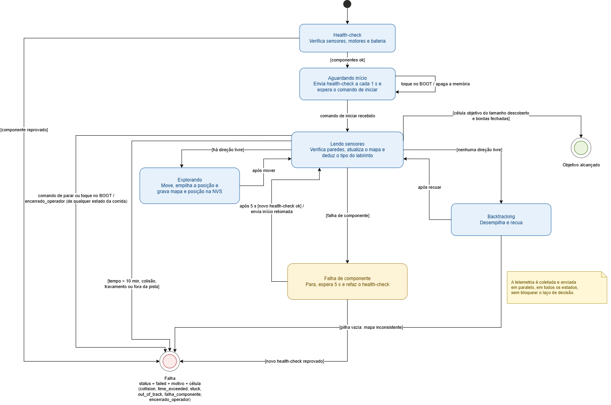
Fonte: João Marcos e Luiza da Silva, 2026.
Protótipo¶
Ratatouille · telas do labirinto 4×4¶
Protótipo da interface de telemetria do robô Ratatouille. O exemplo acompanha a execução #0042 no labirinto 4×4: 72 × 72 cm, 16 células, largada em A1 e objetivo em D4, no canto oposto.
O robô envia os dados por Bluetooth (HM-10) e a interface só recebe e exibe esses dados, sem mandar nenhum comando ao robô. O operador cria a execução, liga o robô e acompanha a corrida. Se a execução terminar em falha, ele pode retomá-la do último checkpoint.
Fluxo principal: Início → Health-check → Em execução → Concluída
Exceções: Execução recusada · Sem comunicação · Encerrar execução → Encerrada como falha
Retomada: Retomar do checkpoint → Retomada (tentativa 2) → Concluída após retomada, ou Falha sem retomada depois de 3 tentativas
Telas do labirinto 4×4¶
1. Início¶
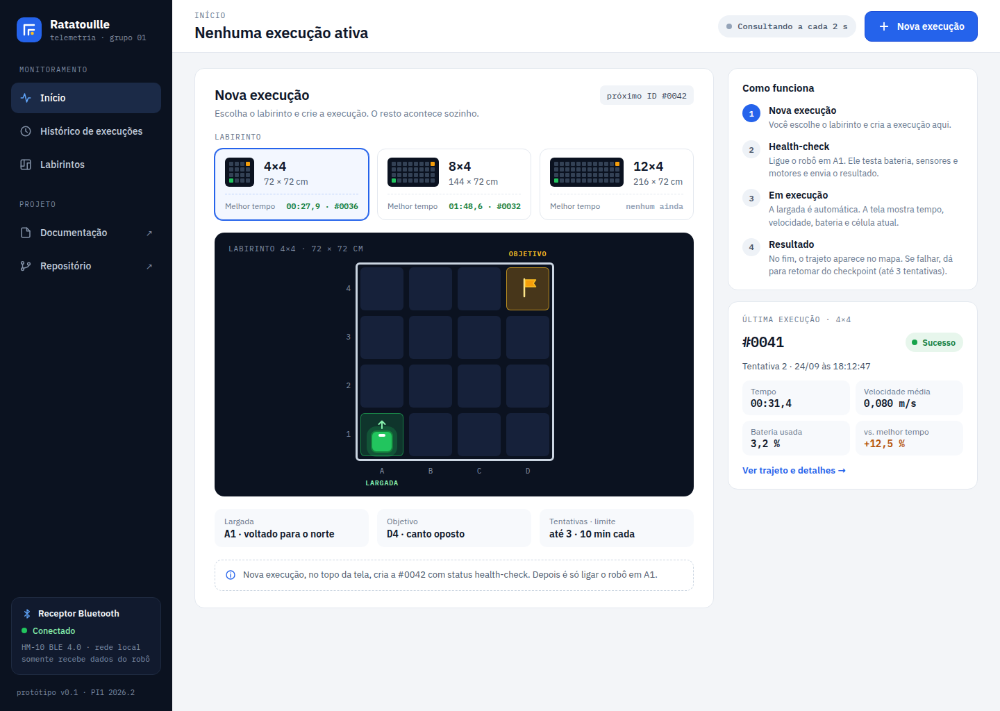
Tela de preparação, exibida quando não há nenhuma execução ativa. O operador escolhe o labirinto (4×4, 8×4 ou 12×4) e cria uma execução pelo botão Nova execução, na barra do topo. Cada labirinto mostra o melhor tempo e qual execução o fez (ex.: 00:27,9 · #0036). Ao lado estão um resumo de como funciona uma execução e os dados da última execução, com link para o detalhe.
2. Health-check¶
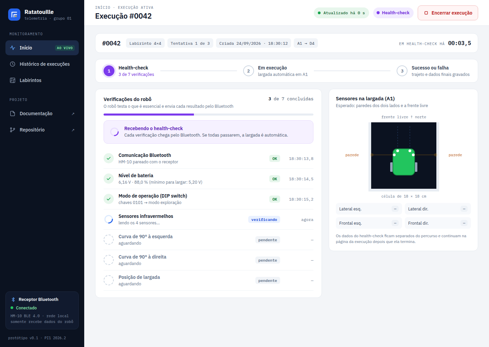
Primeira etapa da execução. Antes da largada, o robô testa sozinho o que é essencial (Bluetooth, bateria, modo de operação, sensores infravermelhos, curvas e posição de largada) e envia cada resultado. A tela mostra o progresso das verificações e a leitura dos sensores. Quando todas passam, a largada é automática.
3. Em execução¶
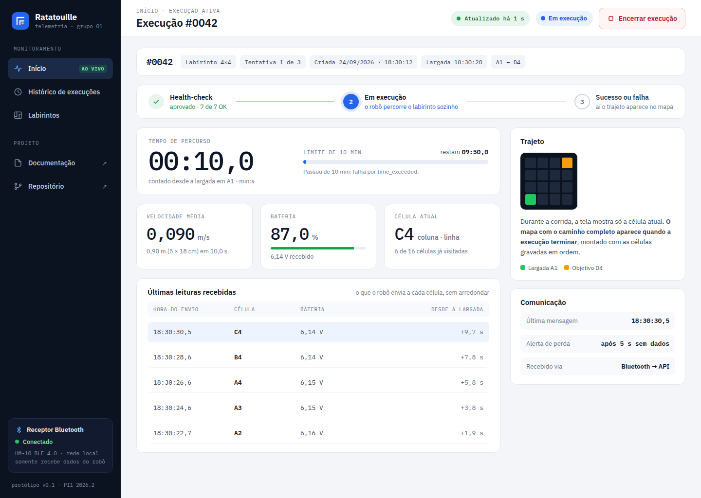
Acompanhamento ao vivo da corrida. Mostra o tempo de percurso comparado ao limite de 10 min, a velocidade média, a bateria, a célula atual e as últimas leituras recebidas. Durante a corrida o mapa mostra só a célula atual; o trajeto completo aparece quando a execução termina. O botão Encerrar execução fica sempre disponível no topo.
4. Concluída¶
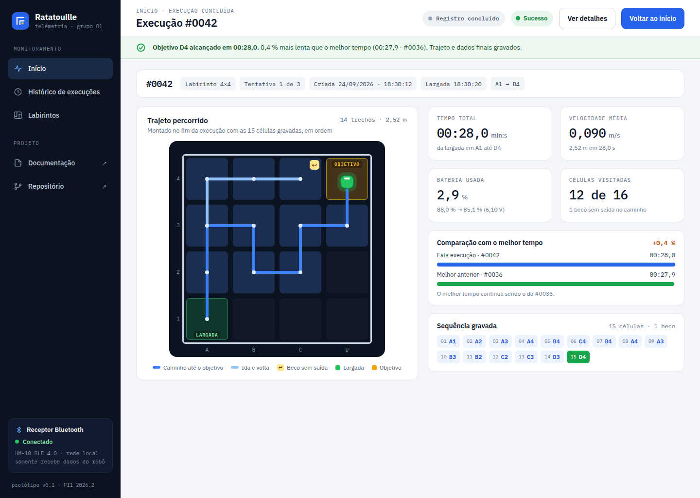
Resultado de uma execução com sucesso: o robô chegou ao objetivo D4. Apresenta o trajeto completo no mapa, o tempo total, a velocidade média, a bateria usada, as células visitadas, a sequência gravada e a comparação com o melhor tempo do labirinto. Daqui o operador vai para o detalhe ou volta ao início.
5. Execução recusada¶
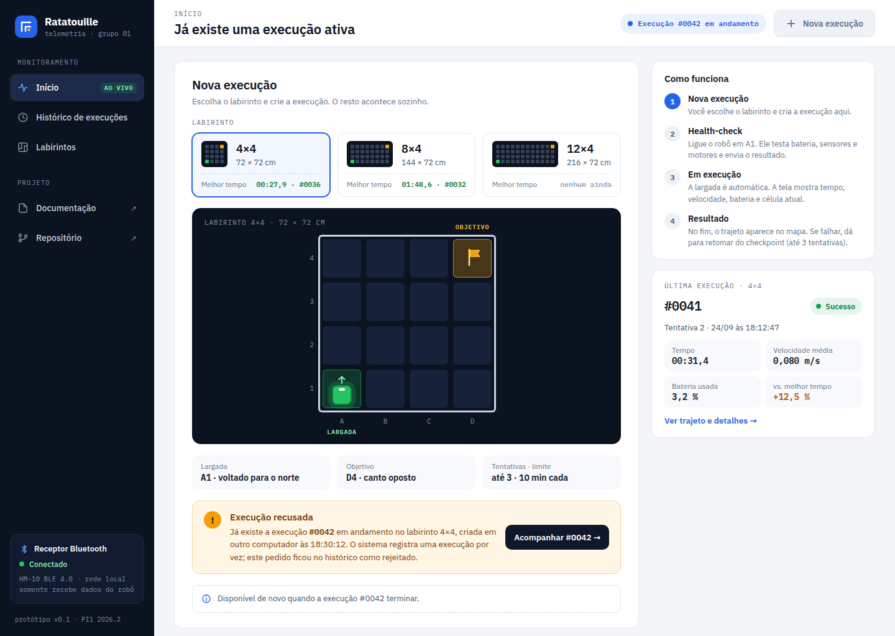
Exceção que aparece quando alguém tenta criar uma execução enquanto outra já está em andamento. O sistema registra uma execução por vez, então o pedido fica no histórico como rejeitado. O botão Acompanhar #0042 leva à execução que está ativa.
6. Sem comunicação¶
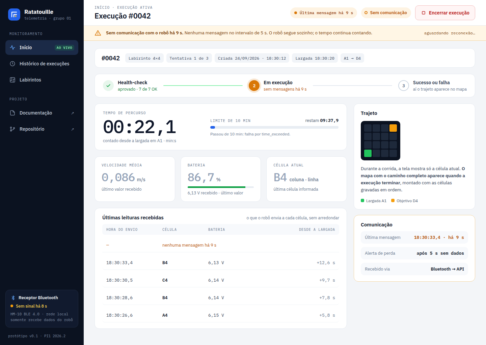
Exceção que aparece quando o robô passa mais de 5 s sem enviar mensagens. O alerta fica no topo e os valores aparecem esmaecidos como "último valor recebido". O robô continua a corrida sozinho e o tempo continua contando. Quando a comunicação volta, a tela retorna ao acompanhamento normal.
7. Encerrar execução¶
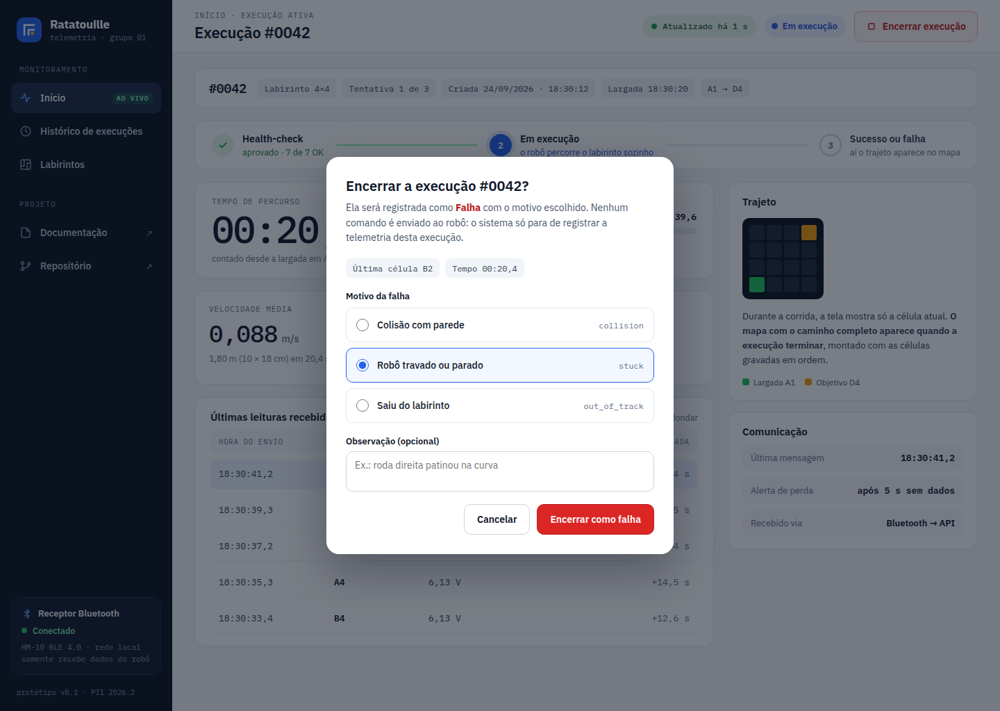
Janela de confirmação para o operador encerrar a execução manualmente. Ele escolhe o motivo da falha (colisão com parede, robô travado ou saiu do labirinto) e pode deixar uma observação. Nada é enviado ao robô: o encerramento serve só para registrar a falha na telemetria.
8. Encerrada como falha¶
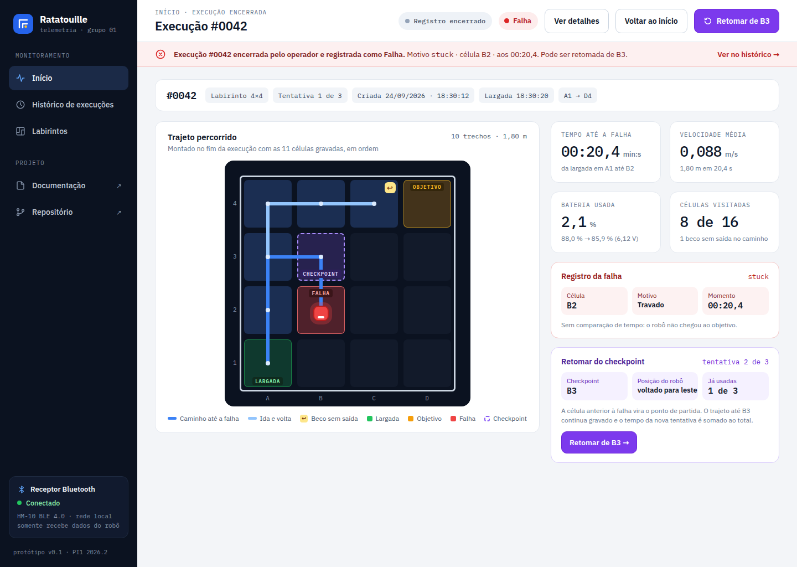
Resultado de uma execução encerrada como falha. O mapa mostra o trajeto até a falha e marca a célula onde ela ocorreu (B2). O checkpoint é a célula anterior (B3). O cartão Registro da falha resume célula, motivo e momento. O cartão Retomar do checkpoint informa quantas tentativas ainda restam (até 3 por execução).
9. Retomar do checkpoint¶
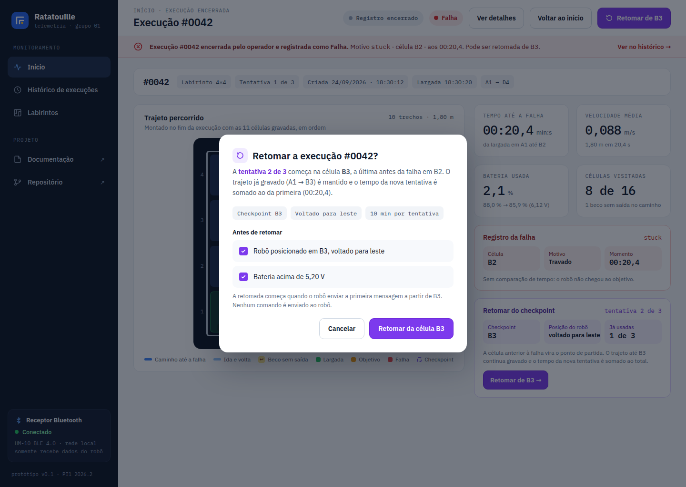
Confirmação da retomada. Explica que a tentativa 2 começa no checkpoint B3, que o trajeto já gravado (A1 → B3) é mantido e que o tempo da nova tentativa é somado ao da primeira. Antes de retomar, o operador confirma que o robô está posicionado em B3 na direção certa e que a bateria está acima de 5,20 V.
10. Retomada · tentativa 2¶
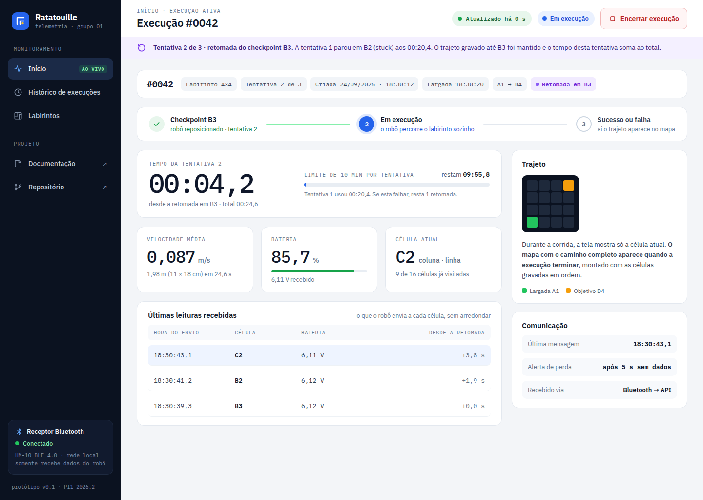
Acompanhamento ao vivo de uma tentativa retomada. É igual à tela Em execução, com três diferenças: um aviso indica "tentativa 2 de 3, retomada do checkpoint B3"; o cronômetro conta o tempo desta tentativa, mas mostra também o total acumulado; e cada tentativa tem o próprio limite de 10 min.
11. Concluída após retomada¶
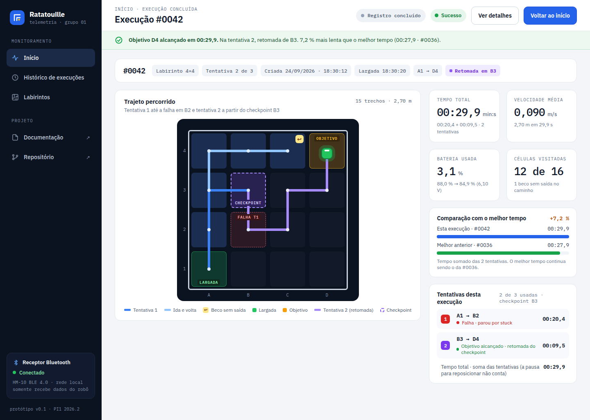
Sucesso depois de uma retomada. O mapa mostra as duas tentativas com cores diferentes (tentativa 1 até a falha e tentativa 2 a partir do checkpoint). O tempo total é a soma das tentativas, sem contar a pausa para reposicionar o robô. O cartão Tentativas desta execução detalha o trecho e o tempo de cada uma.
12. Falha sem retomada (3 de 3)¶
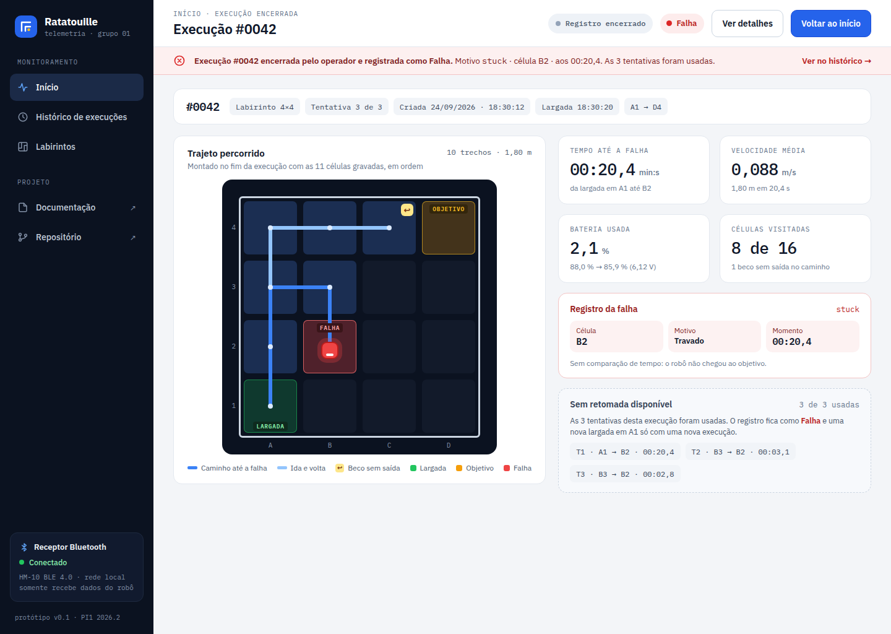
Falha depois que as 3 tentativas já foram usadas. A tela mostra o trajeto e o registro da falha, e o cartão Sem retomada disponível lista o trecho e o tempo de cada tentativa. Não é possível retomar de novo: para correr outra vez a partir de A1, é preciso criar uma nova execução.
Ratatouille · telas do labirinto 8×4¶
Protótipo da interface de telemetria do robô Ratatouille. O exemplo acompanha a execução #0043 no labirinto 8×4: 144 × 72 cm, 32 células, largada em A1 e objetivo em H4, no canto oposto.
O robô envia os dados por Bluetooth (HM-10) e a interface só recebe e exibe esses dados, sem mandar nenhum comando ao robô. O operador cria a execução, liga o robô e acompanha a corrida. Se a execução terminar em falha, ele pode retomá-la do último checkpoint.
Fluxo principal: Início → Health-check → Em execução → Concluída
Exceções: Execução recusada · Sem comunicação · Encerrar execução → Encerrada como falha
Retomada: Retomar do checkpoint → Retomada (tentativa 2) → Concluída após retomada, ou Falha sem retomada depois de 3 tentativas
Telas do labirinto 8×4¶
1. Início¶
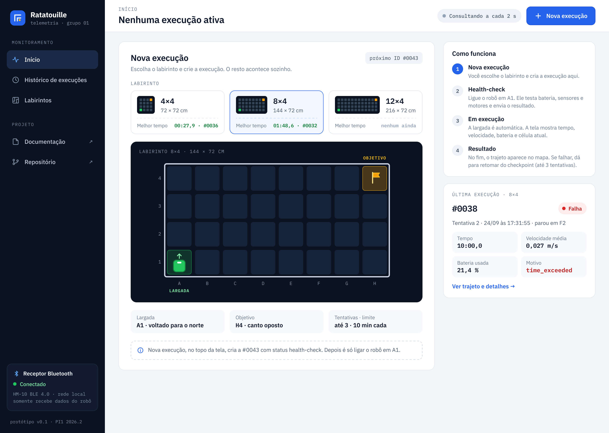
Tela de preparação, exibida quando não há nenhuma execução ativa. O operador escolhe o labirinto (4×4, 8×4 ou 12×4) e cria uma execução pelo botão Nova execução, na barra do topo. Cada labirinto mostra o melhor tempo e qual execução o fez (ex.: 01:48,6 · #0032). Ao lado estão um resumo de como funciona uma execução e os dados da última execução, com link para o detalhe.
2. Health-check¶
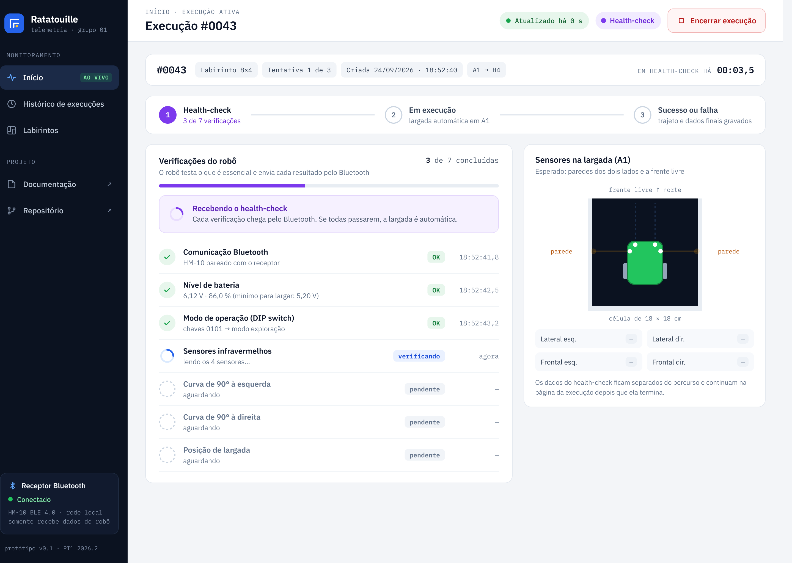
Primeira etapa da execução. Antes da largada, o robô testa sozinho o que é essencial (Bluetooth, bateria, modo de operação, sensores infravermelhos, curvas e posição de largada) e envia cada resultado. A tela mostra o progresso das verificações e a leitura dos sensores. Quando todas passam, a largada é automática.
3. Em execução¶
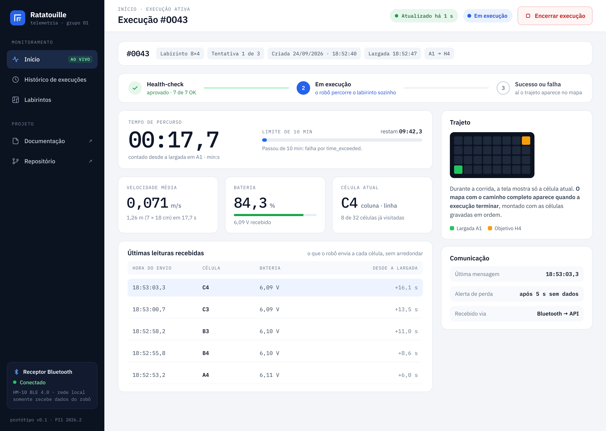
Acompanhamento ao vivo da corrida. Mostra o tempo de percurso comparado ao limite de 10 min, a velocidade média, a bateria, a célula atual e as últimas leituras recebidas. Durante a corrida o mapa mostra só a célula atual; o trajeto completo aparece quando a execução termina. O botão Encerrar execução fica sempre disponível no topo.
4. Concluída¶
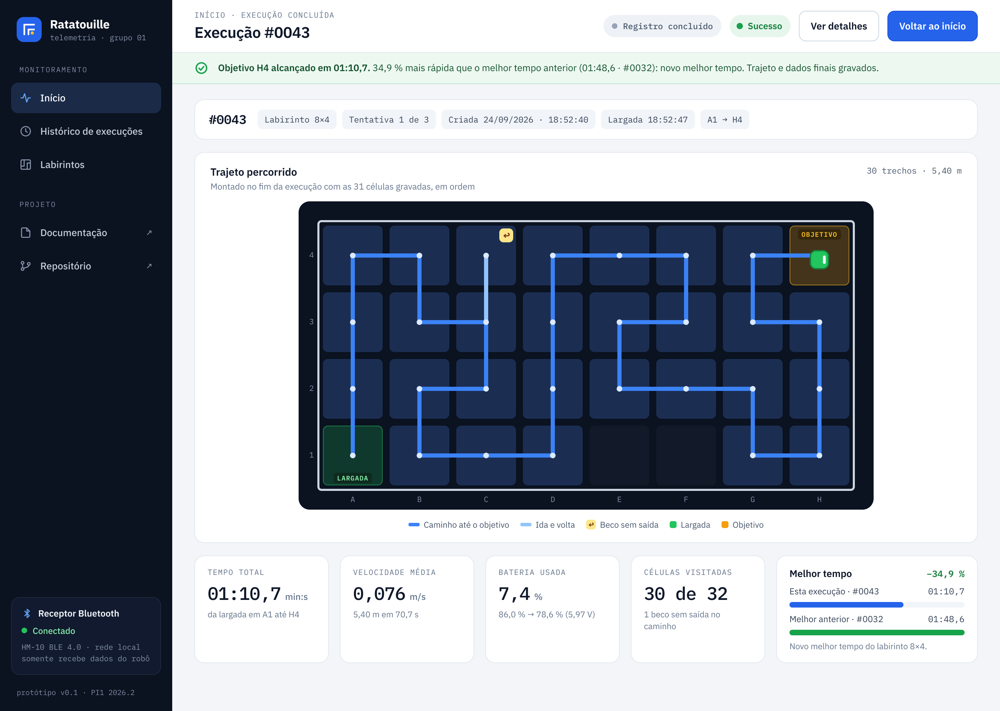
Resultado de uma execução com sucesso: o robô chegou ao objetivo H4. Apresenta o trajeto completo no mapa, o tempo total, a velocidade média, a bateria usada, as células visitadas, a sequência gravada e a comparação com o melhor tempo do labirinto. Daqui o operador vai para o detalhe ou volta ao início.
5. Execução recusada¶
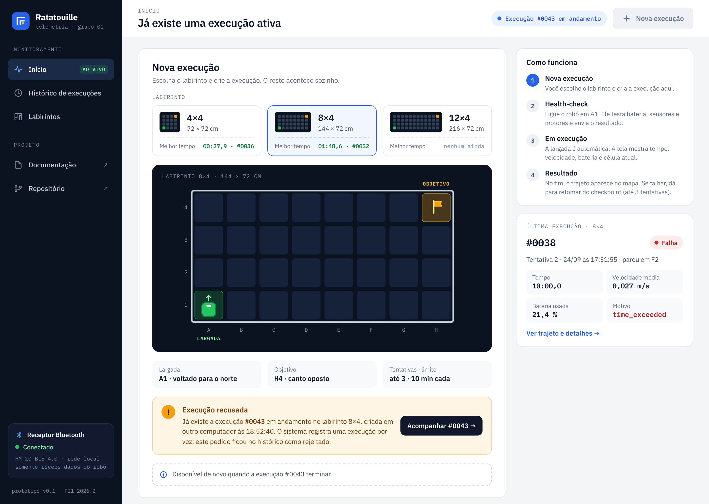
Exceção que aparece quando alguém tenta criar uma execução enquanto outra já está em andamento. O sistema registra uma execução por vez, então o pedido fica no histórico como rejeitado. O botão Acompanhar #0043 leva à execução que está ativa.
6. Sem comunicação¶
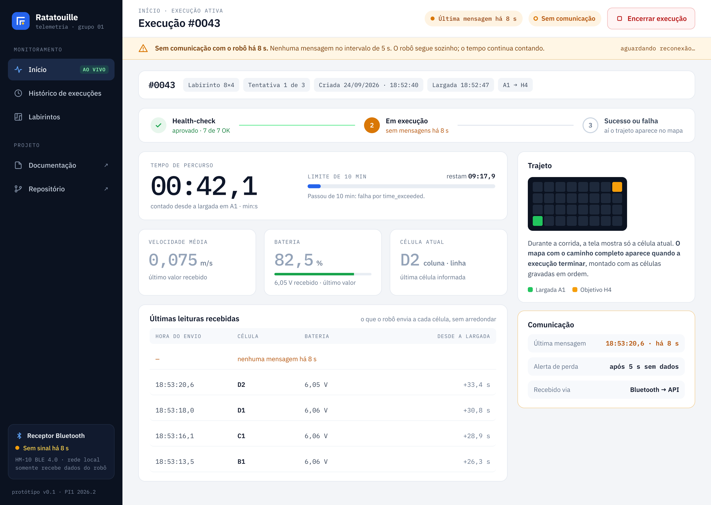
Exceção que aparece quando o robô passa mais de 5 s sem enviar mensagens. O alerta fica no topo e os valores aparecem esmaecidos como "último valor recebido". O robô continua a corrida sozinho e o tempo continua contando. Quando a comunicação volta, a tela retorna ao acompanhamento normal.
7. Encerrar execução¶
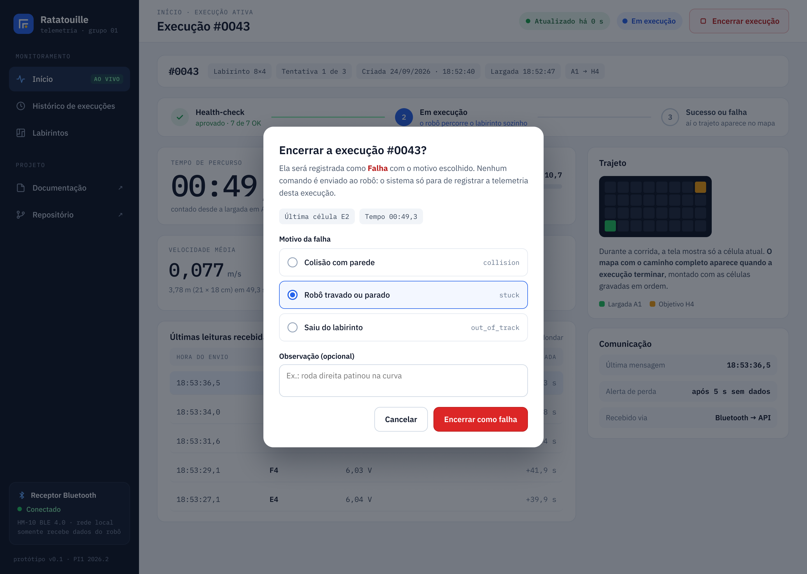
Janela de confirmação para o operador encerrar a execução manualmente. Ele escolhe o motivo da falha (colisão com parede, robô travado ou saiu do labirinto) e pode deixar uma observação. Nada é enviado ao robô: o encerramento serve só para registrar a falha na telemetria.
8. Encerrada como falha¶
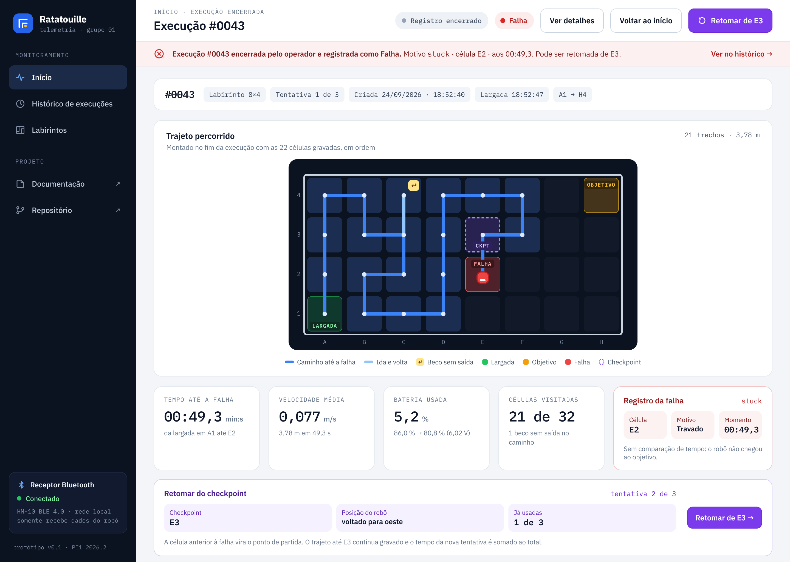
Resultado de uma execução encerrada como falha. O mapa mostra o trajeto até a falha e marca a célula onde ela ocorreu (E2). O checkpoint é a célula anterior (E3). O cartão Registro da falha resume célula, motivo e momento. O cartão Retomar do checkpoint informa quantas tentativas ainda restam (até 3 por execução).
9. Retomar do checkpoint¶
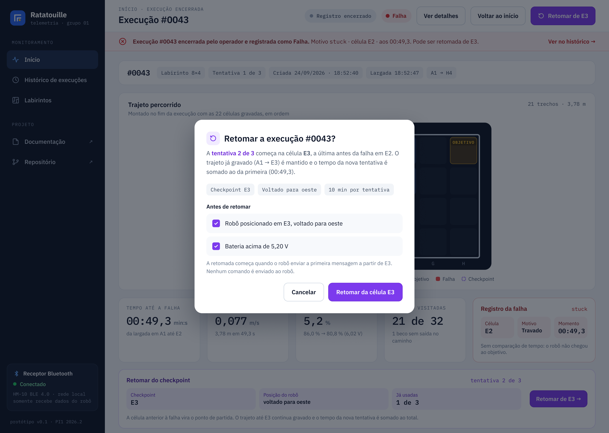
Confirmação da retomada. Explica que a tentativa 2 começa no checkpoint E3, que o trajeto já gravado (A1 → E3) é mantido e que o tempo da nova tentativa é somado ao da primeira. Antes de retomar, o operador confirma que o robô está posicionado em E3 na direção certa e que a bateria está acima de 5,20 V.
10. Retomada · tentativa 2¶
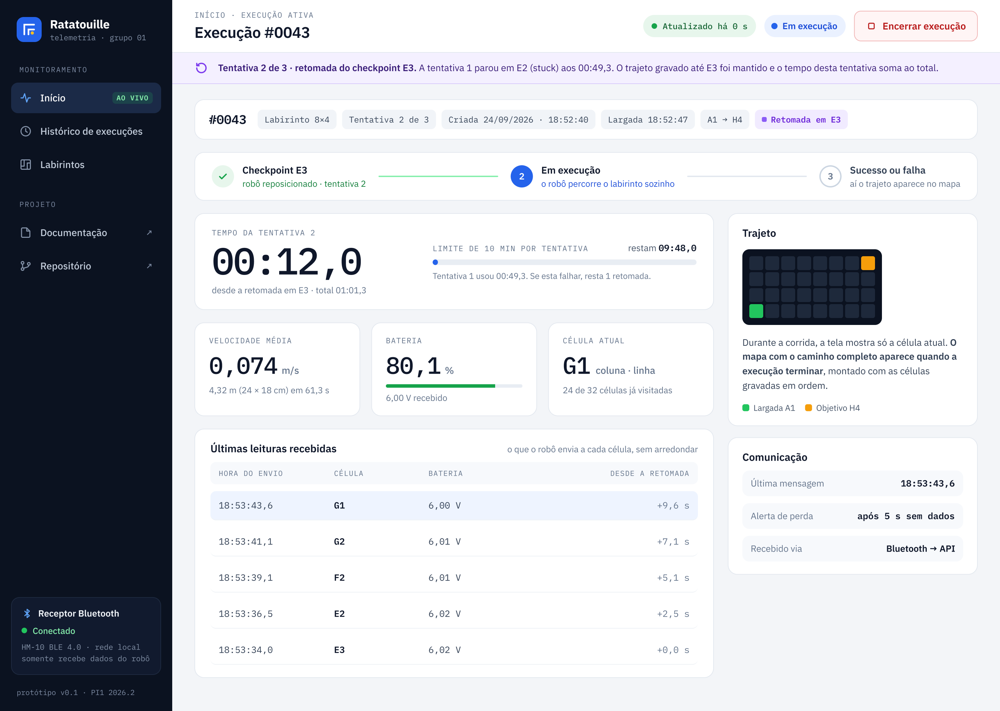
Acompanhamento ao vivo de uma tentativa retomada. É igual à tela Em execução, com três diferenças: um aviso indica "tentativa 2 de 3, retomada do checkpoint E3"; o cronômetro conta o tempo desta tentativa, mas mostra também o total acumulado; e cada tentativa tem o próprio limite de 10 min.
11. Concluída após retomada¶
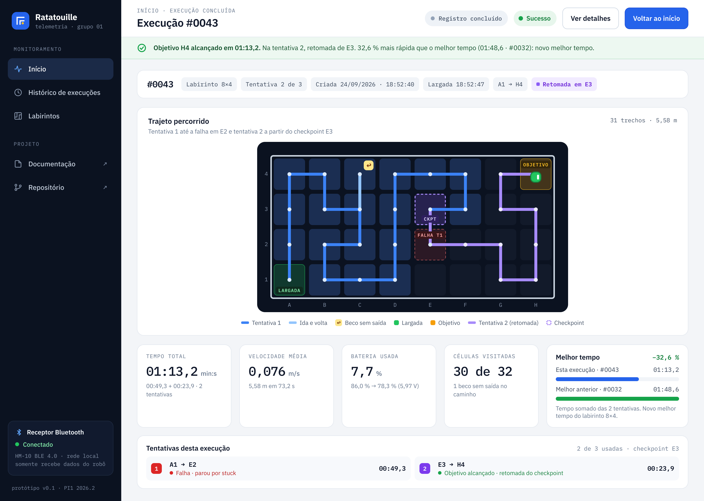
Sucesso depois de uma retomada. O mapa mostra as duas tentativas com cores diferentes (tentativa 1 até a falha e tentativa 2 a partir do checkpoint). O tempo total é a soma das tentativas, sem contar a pausa para reposicionar o robô. O cartão Tentativas desta execução detalha o trecho e o tempo de cada uma.
12. Falha sem retomada (3 de 3)¶
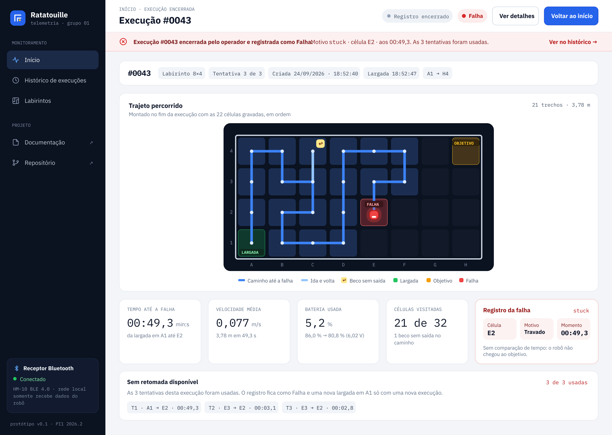
Falha depois que as 3 tentativas já foram usadas. A tela mostra o trajeto e o registro da falha, e o cartão Sem retomada disponível lista o trecho e o tempo de cada tentativa. Não é possível retomar de novo: para correr outra vez a partir de A1, é preciso criar uma nova execução.
Ratatouille · telas do labirinto 12×4¶
Protótipo da interface de telemetria do robô Ratatouille. O exemplo acompanha a execução #0044 no labirinto 12×4: 216 × 72 cm, 48 células, largada em A1 e objetivo em L4, no canto oposto.
O robô envia os dados por Bluetooth (HM-10) e a interface só recebe e exibe esses dados, sem mandar nenhum comando ao robô. O operador cria a execução, liga o robô e acompanha a corrida. Se a execução terminar em falha, ele pode retomá-la do último checkpoint.
Fluxo principal: Início → Health-check → Em execução → Concluída
Exceções: Execução recusada · Sem comunicação · Encerrar execução → Encerrada como falha
Retomada: Retomar do checkpoint → Retomada (tentativa 2) → Concluída após retomada, ou Falha sem retomada depois de 3 tentativas
Telas do labirinto 12×4¶
1. Início¶
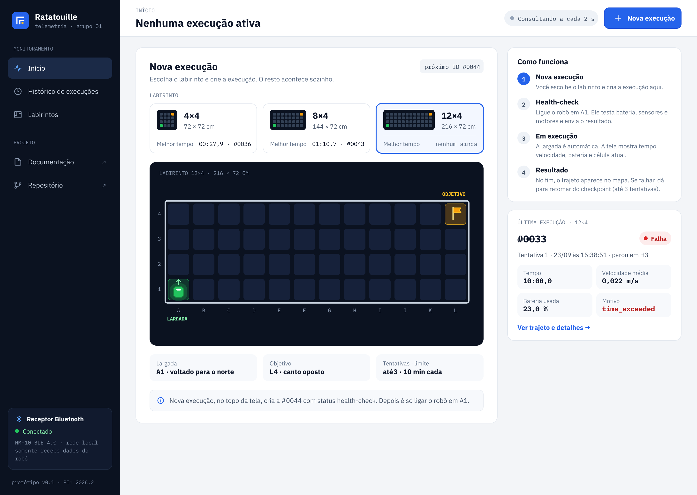
Tela de preparação, exibida quando não há nenhuma execução ativa. O operador escolhe o labirinto (4×4, 8×4 ou 12×4) e cria uma execução pelo botão Nova execução, na barra do topo. Cada labirinto mostra o melhor tempo e qual execução o fez; no 12×4 ainda não há melhor tempo, então aparece "nenhum ainda". Ao lado estão um resumo de como funciona uma execução e os dados da última execução, com link para o detalhe.
2. Health-check¶
Primeira etapa da execução. Antes da largada, o robô testa sozinho o que é essencial (Bluetooth, bateria, modo de operação, sensores infravermelhos, curvas e posição de largada) e envia cada resultado. A tela mostra o progresso das verificações e a leitura dos sensores. Quando todas passam, a largada é automática.
3. Em execução¶
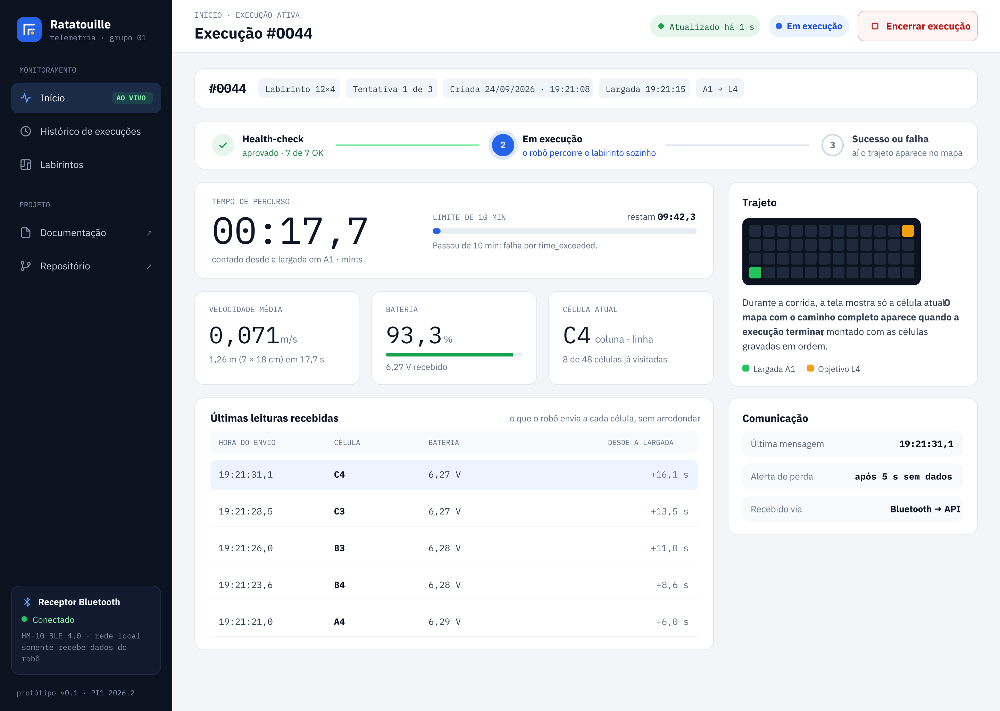
Acompanhamento ao vivo da corrida. Mostra o tempo de percurso comparado ao limite de 10 min, a velocidade média, a bateria, a célula atual e as últimas leituras recebidas. Durante a corrida o mapa mostra só a célula atual; o trajeto completo aparece quando a execução termina. O botão Encerrar execução fica sempre disponível no topo.
4. Concluída¶
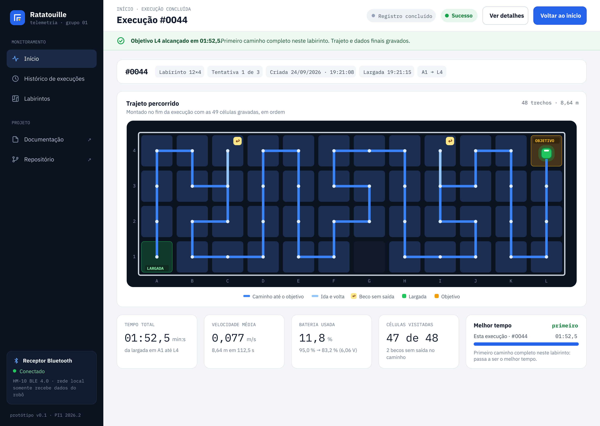
Resultado de uma execução com sucesso: o robô chegou ao objetivo L4. Apresenta o trajeto completo no mapa, o tempo total, a velocidade média, a bateria usada, as células visitadas, a sequência gravada e a comparação com o melhor tempo do labirinto. Daqui o operador vai para o detalhe ou volta ao início.
5. Execução recusada¶
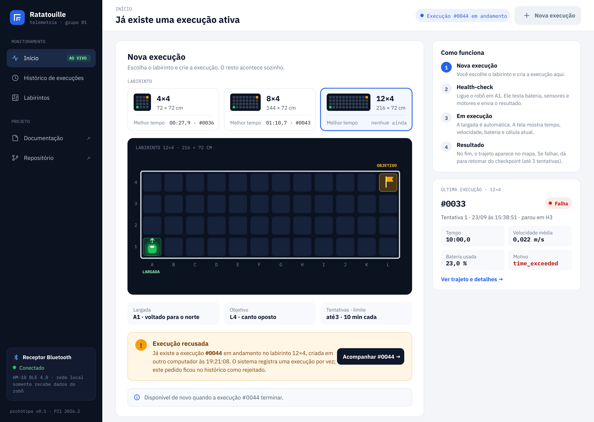
Exceção que aparece quando alguém tenta criar uma execução enquanto outra já está em andamento. O sistema registra uma execução por vez, então o pedido fica no histórico como rejeitado. O botão Acompanhar #0044 leva à execução que está ativa.
6. Sem comunicação¶
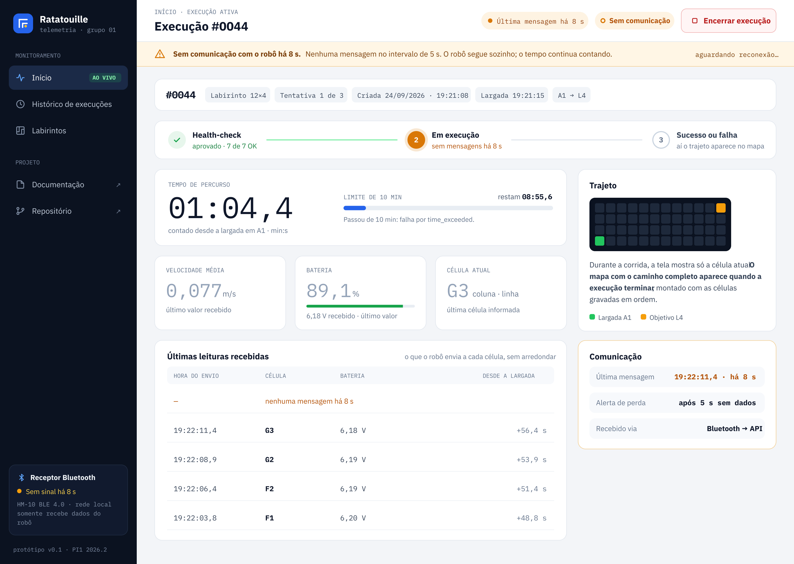
Exceção que aparece quando o robô passa mais de 5 s sem enviar mensagens. O alerta fica no topo e os valores aparecem esmaecidos como "último valor recebido". O robô continua a corrida sozinho e o tempo continua contando. Quando a comunicação volta, a tela retorna ao acompanhamento normal.
7. Encerrar execução¶
Janela de confirmação para o operador encerrar a execução manualmente. Ele escolhe o motivo da falha (colisão com parede, robô travado ou saiu do labirinto) e pode deixar uma observação. Nada é enviado ao robô: o encerramento serve só para registrar a falha na telemetria.
8. Encerrada como falha¶
Resultado de uma execução encerrada como falha. O mapa mostra o trajeto até a falha e marca a célula onde ela ocorreu (H2). O checkpoint é a célula anterior (H3). O cartão Registro da falha resume célula, motivo e momento. O cartão Retomar do checkpoint informa quantas tentativas ainda restam (até 3 por execução).
9. Retomar do checkpoint¶
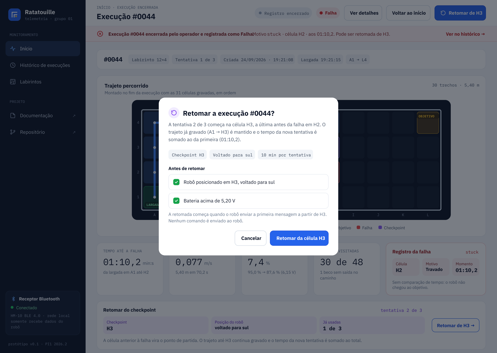
Confirmação da retomada. Explica que a tentativa 2 começa no checkpoint H3, que o trajeto já gravado (A1 → H3) é mantido e que o tempo da nova tentativa é somado ao da primeira. Antes de retomar, o operador confirma que o robô está posicionado em H3 na direção certa e que a bateria está acima de 5,20 V.
10. Retomada · tentativa 2¶
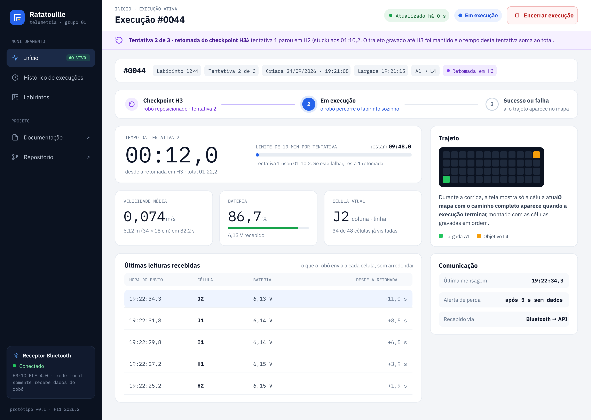
Acompanhamento ao vivo de uma tentativa retomada. É igual à tela Em execução, com três diferenças: um aviso indica "tentativa 2 de 3, retomada do checkpoint H3"; o cronômetro conta o tempo desta tentativa, mas mostra também o total acumulado; e cada tentativa tem o próprio limite de 10 min.
11. Concluída após retomada¶
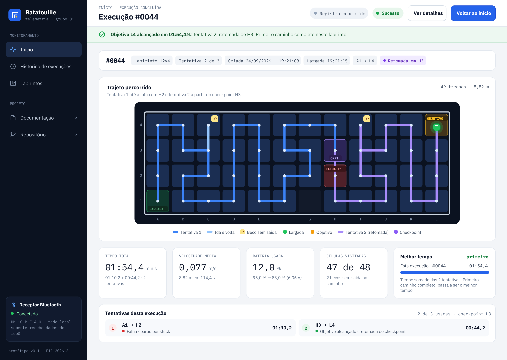
Sucesso depois de uma retomada. O mapa mostra as duas tentativas com cores diferentes (tentativa 1 até a falha e tentativa 2 a partir do checkpoint). O tempo total é a soma das tentativas, sem contar a pausa para reposicionar o robô. O cartão Tentativas desta execução detalha o trecho e o tempo de cada uma.
12. Falha sem retomada (3 de 3)¶
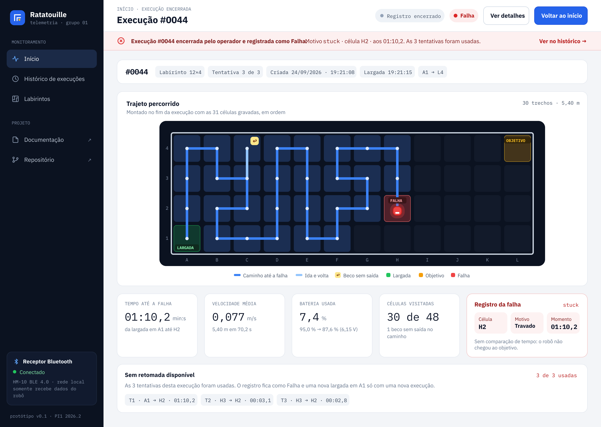
Falha depois que as 3 tentativas já foram usadas. A tela mostra o trajeto e o registro da falha, e o cartão Sem retomada disponível lista o trecho e o tempo de cada tentativa. Não é possível retomar de novo: para correr outra vez a partir de A1, é preciso criar uma nova execução.
Link de acesso ao Figma¶
Referências¶
ESPRESSIF SYSTEMS. ESP32 Series Datasheet, versão 3.0, 2019. Disponível em: ESP32.pdf. Acesso em: 23 de set. 2026.
FastAPI. Documentação oficial. Disponível em: https://fastapi.tiangolo.com/. Acesso em: 23 de set. 2026.
SQLAlchemy. Documentação oficial. Disponível em: https://docs.sqlalchemy.org/. Acesso em: 23 de set. 2026.
PostgreSQL. Documentação oficial. Disponível em: https://www.postgresql.org/docs/. Acesso em: 23 de set. 2026.
Docker. Docker Compose overview. Disponível em: https://docs.docker.com/compose/. Acesso em: 23 de set. 2026.
LAW, G. Quantitative comparison of flood fill and modified flood fill algorithms. International Journal of Computer Theory and Engineering, v. 5, n. 3, p. 503-508, 2013. Disponível em: PDF. Acesso em: 25 de set. 2026.
SHARMA, K.; MUNSHI, C. A comprehensive and comparative study of maze-solving techniques by implementing graph theory. IOSR Journal of Computer Engineering, v. 17, n. 1, p. 24-29, 2015. Disponível em: PDF. Acesso em: 25 de set. 2026.
TJIHARJADI, S.; WIJAYA, M. C.; SETIAWAN, E. Optimization maze robot using A and flood fill algorithm. International Journal of Mechanical Engineering and Robotics Research*, v. 6, n. 5, p. 366-372, 2017. Disponível em: PDF. Acesso em: 25 de set. 2026.
HARRISON, P. Solving the maze. Micromouse Online. Disponível em: https://micromouseonline.com/micromouse-book/mazes-and-maze-solving/solving-the-maze/. Acesso em: 25 de set. 2026.
JSDKK (Japan System Design). どこよりも詳しいマイクロマウス解説, seção 4-5 "足立法の冊子". Disponível em: https://jsdkk.com/home/glossary/glossary-micromouse/. Acesso em: 25 de set. 2026.
HARRISON, P. Adachi micromouse maze solving algorithms. Micromouse Online, 27 maio 2008. Disponível em: https://micromouseonline.com/2008/05/27/adachi-micromouse-maze-solving-algorithms/. Acesso em: 25 de set. 2026.